Overview
Teams that train perception models for autonomous driving, robotics, and 3D scene understanding need large volumes of cleanly structured 3D annotations. This tool is a browser-based point cloud annotation component for the SuperAnnotate multimodal platform — a WebGL 3D viewer for LiDAR-style scenes, configurable per project, and built for teams who need more than a basic 3D box labeller.
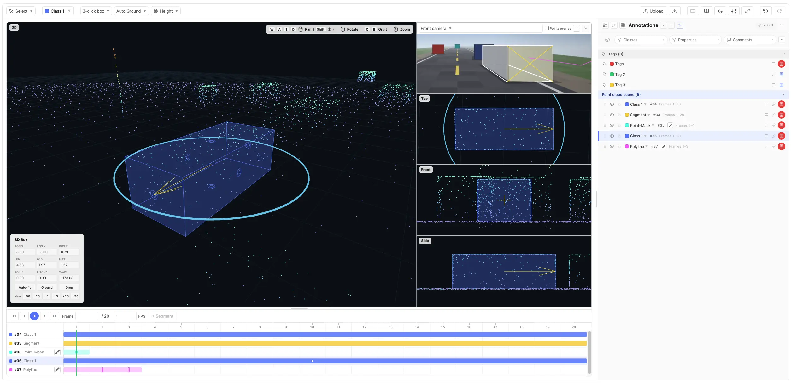
Key Capabilities
- Interactive 3D point cloud canvas — a Three.js/WebGL viewer that renders decimated LiDAR-style clouds with Height / Source Intensity / Source RGB / Solid coloring, adjustable point size, mouse-and-keyboard orbit / pan / zoom navigation, and a 3D view with a collapsible Top / Front / Side side-rail. Point Cloud Viewer →
- Five tools — Select, timeline-only Segment, 3D Box, per-point Point Mask, and world-space Polyline. Classes & Tools →
- Adaptive drawing ground — draw on a supplied dataset elevation, a detected ground plane, world z=0, or a temporary custom elevation. This keeps boxes and Polylines usable when a sensor is mounted above the road. Ground Reference →
- 3D cuboids with full 6-DOF pose — every box stores a position, dimensions, and 3-axis rotation (metres, +Z up). Draw by dragging a footprint or with a three-click rotated-box workflow, optionally deriving the box height from the tallest point inside its footprint. Drawing 3D Boxes →
- Per-point 3D segmentation — Point Masks tint the points that belong to an instance on each frame. Paint or erase through the active camera projection in the 3D, Top, Front, or Side pane, and optionally limit edits with a temporary 3D Constraint Box. Point Masks →
- Geometry-free ranges and 3D paths — Segments annotate a class and properties over a frame range without spatial geometry; Polylines store independent world-space vertex arrays on filled frames, with direct vertex editing and no interpolation.
- Frame sequences & keyframe interpolation — a scene is an ordered sequence of point-cloud frames. Box pose is keyframed per frame and linearly interpolated between keyframes (rotation along the shortest angle). Interpolation →
- Camera reference images with geometry projection — calibrated views project 3D Boxes and Polylines onto frame-synced imagery. Segments have no projection. Camera Reference Images →
- Per-class properties — Free Text, Select (single / multi), Numeric, Rating, and Approval properties on every class, with per-role visibility, option-visibility rules, and frame-indexed time-based values. Properties →
- Frame timeline — a docked timeline with range bars, box keyframes, Point Mask squares, Polyline filled / hollow strokes, property-change circles, and playback. Frame Timeline →
- Tags & relationships — item-scoped or point-cloud-scoped tags for classification; admin-curated relationships for linking annotations into graphs. Tags → · Relationships →
- Comments & isolation — scoped comments on every annotation; per-user isolation with role-based bypass for QA. Comments → · Annotation Isolation →
- JSONL ingest / ZIP export — load point-cloud frames (uploaded, public, presigned, or integration-signed URLs) at the platform level; export annotations + name-id maps as a ZIP. Import → · Export →
- Continuous auto-save — local state debounces every ~1 s; the platform receives a server save every 60 s. Auto-Save →
.pcd files (ASCII and uncompressed binary), extracting x/y/z plus optional intensity / packed rgb source fields. A built-in synthetic demo scene lets you exercise the full drawing / editing / playback flow without real sensor data.How It Works
The tool has two runtime modes, keeping setup separate from working:
- Configuration mode — An admin defines Segment, 3D Box, Point Mask, and Polyline classes, tags, properties, feature toggles, and per-role instructions.
- Working mode — Users create ranges, boxes, masks, and paths across the frame sequence, edit properties, and review. Everything auto-saves.
Typical flow: admin configures the project → items arrive (uploaded frames or URL-linked point clouds via JSONL) → annotators work → export annotations for model training.
First Annotation
- Open an item in the editor and let the point cloud load (or choose an example scene on the empty state).
- Pick a class from the dropdown (or press 1–9). Its configured annotation tool is selected automatically.
- Create the annotation:
- 3D Box — use the default three-click method or drag a footprint on the active drawing ground. The box receives a fixed or point-derived height.
- Point Mask — paint over projected points with the default circular brush. The first completed stroke creates a one-frame mask instance and immediately enters editing mode; use its gear button for Paint / Erase, Brush / Lasso / Rectangle, brush size, and the optional Constraint Box.
- Segment — choose a Segment class (or press G to arm its tool), then click + Segment in the timeline. It is created from the current frame through the scene's last frame, with no viewer geometry.
- Polyline — press L, click at least two vertices, then double-click or press Enter. New instances begin on the current frame only.
- The annotation appears in the annotation panel on the right and as a row on the frame timeline below.
- For a box, switch to Select (V) to fine-tune its pose. For a mask or Polyline, use the row's brush or pencil button to enter / leave its dedicated editing state. Fill any properties the class defines.
- Across later frames, re-pose a box, move a Segment range, or extend a Point Mask / Polyline range and fill each required frame explicitly. Everything auto-saves.
Configuration
Configuration defines the labeling schema and the experience each role gets — what users can see, do, and capture. A well-designed configuration is the single most impactful step before annotation begins.
Access Control
Access Control is a set of per-feature allow-lists. Each control gates a separate capability:
- Upload Files (Roles) — which roles can use the in-editor upload button to add new point-cloud frames.
- Download Annotations (Roles) — which roles see the Download button.
- Annotation Isolation — Off or By User. When set to By User, each user only sees their own annotations. Bypass Isolation (Roles) and Bypass Isolation (Statuses) independently let reviewers see everyone's work. See Annotation Isolation.
Role and status pickers share the same behaviour: Select all stores All Roles or All Statuses, including roles or statuses added later; a partial selection stores only the checked IDs; No Roles or No Statuses grants no bypass. Upload and download default to admin-only. Isolation bypass defaults to no roles and no statuses when isolation is enabled.
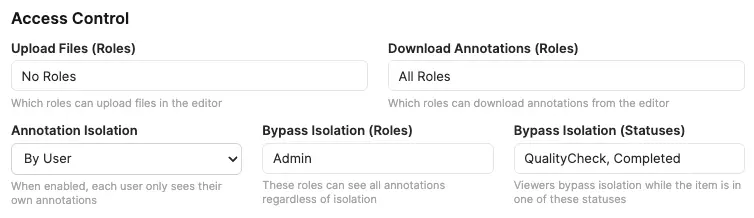
Feature Control
Feature Control toggles editor capabilities. Turning a feature off hides every affordance for it across the editor.
- Object Comments (Off / On) — enables comments on annotations. When on, two sub-controls appear: which roles can resolve and which can delete comments.
- Instance Relationships (Off / On) — enables relationships between annotations. When on, a Relationship Types editor appears so admins can curate the relationship taxonomy. Relationship type names must be unique (case-insensitive); duplicate or empty names are silently reverted on blur.
- Annotation Panel — controls which views of the annotation panel are available: Instance + Table, Instance only, Table only, or None. The adjacent Configure Annotation Panel button becomes active whenever the panel is enabled (any mode other than None); the Table Column Settings button further activates when the table view is specifically reachable (Instance + Table or Table only).
- Fullscreen on First Interaction (Off / On) — the first pointer interaction inside the editor requests fullscreen (browsers cannot enter fullscreen without a user gesture). Applies once per editor mount; annotators can exit with Esc or the toolbar button and are not forced again until the next item load. A brief informational notice confirms when fullscreen was triggered by this setting.
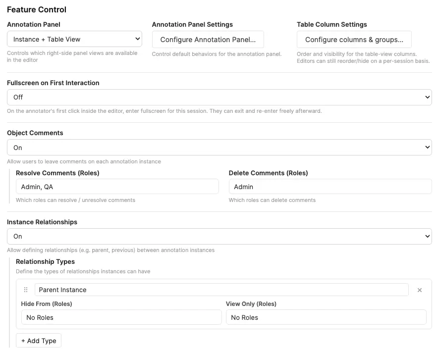
Annotation Panel Settings
Click Configure Annotation Panel… to set the project-wide defaults that apply when an editor is first opened. Each control commits live — Done simply closes the modal and Restore to Default clears every setting in this modal back to the built-in baseline. Editors can still resize, regroup, or reorder per-session from the panel header; this modal only controls what they start with.
- Default panel width. Optional percentage (between 20% and 75% of the editor's container width) used as the starting width of the annotation panel. Out-of-range values snap to the closest valid percentage; leave the field blank to fall back to the built-in default of 480 px. Once an annotator drags the resize handle in the editor, their per-session width takes over until they reload.
- Default Group By. Initial grouping mode for the panel (Point Cloud Name, Class Name, Tool Type, or any project property). Property options are gathered from every regular and tag class. If the chosen property has 100 or more distinct values across the open item, the editor falls back to Point Cloud Name grouping for that session — the configured selection re-engages automatically once the dataset shrinks below 100.
- Default Order By. Initial ordering of instances (JSON Export, Class Name, Tool Type, Start frame, Created By, Creator Role, Created At, or any project property). Drag-to-reorder in the panel only writes to the JSON-export order, so it is only available when Group By is set to Point Cloud Name and Order By is set to JSON Export — either as project default or at the per-session level.
Reset chevron in the editor. Each Group By / Order By dropdown in the editor has a small reset arrow next to its title to revert to config-selected defaults.
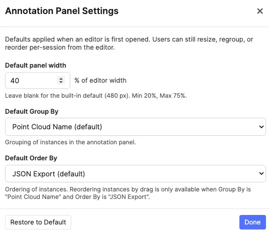
Table Column Settings
Click Configure columns & groups… to open a two-panel modal that controls the Table View columns for the whole project.
Left panel — Columns. Lists every column currently available (excluding role-hidden ones). Drag rows to reorder; uncheck Show to hide a column by default. Click the pin icon to keep a column glued to the leading edge while editors scroll the table horizontally. Changes are saved immediately — Done simply closes the modal. Restore to Default clears all column and group overrides.
Pinned columns. A pinned column sticks to the leading edge of the Table View when editors scroll horizontally; pinned columns always render before unpinned ones in both the editor's Columns dropdown and the table itself, preserving their relative order within each cluster. Drag-reordering inside the modal is also restricted to within a cluster — drop a row across the pinned/unpinned boundary and it snaps back. Pinning is independent of Show: a pinned-but-hidden column is dormant (its pin icon dims at 55% opacity) and reactivates the next time the column is shown. Pinning two or more columns can leave little room for unpinned columns on narrow annotation panels — a heads-up note appears when this happens.
Right panel — Column Groups. Groups let you bundle related columns so editors can show or hide them all at once with a single toggle chip in the Table View. Click + Add Group to create a group, give it a short label, and pick columns from the dropdown. Group labels must be unique (case-insensitive); duplicate or empty labels are silently reverted. Each column can belong to at most one group. Columns assigned to a group have their individual Show checkbox controlled by the group's visibility toggle. Empty groups (no columns selected) are automatically removed when the modal closes.
- Per-session user adjustments. Annotators keep their existing per-session control via the Columns dropdown and the column group chips — their adjustments don't persist across reloads; the project default does.
- New columns appear at the end, visible. Adding a new property or relationship type after configuring defaults appends it visible. Reopen the modal to reposition or hide it.
- Stale entries keep their position. Removing a column source (e.g. toggling Comments off) doesn't drop its stored position — it returns to the same spot if re-enabled later.
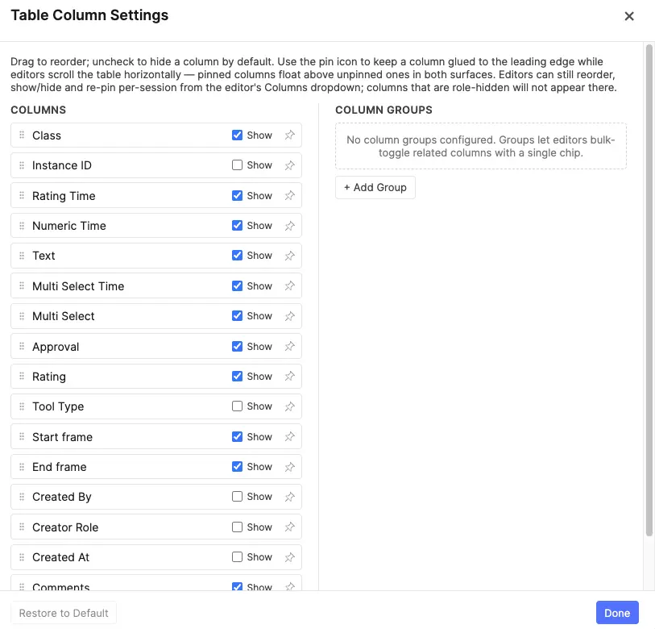
Classes & Tags
Classes and tags together form the structured vocabulary of your project. Classes describe what individual annotations are; tags describe what the point cloud or whole item is about.
Classes
A class is what a user assigns to a new annotation. Each class has:
- Name — the label shown in the class picker and the annotation panel.
- Color — the highlight / fill colour used for that class's boxes or painted points in the viewer, panel, and timeline.
- Tool Type — one of
segment,cuboid_3d,point_mask, orpolyline. Picking a class auto-selects its matching tool. (Select is global, not a class type.) - Properties — the structured fields captured on each annotation of this class (see Properties below).
The tool type and what it produces:
| Type | Where it draws | Captures |
|---|---|---|
| Segment | Timeline only; no viewer geometry. | A class-colored frame range with properties, time-based property keyframes, comments, relationships, and visibility. |
| 3D Box | The point cloud viewer. Draw on the active ground reference by dragging a footprint or with a three-click rotated-box workflow; edit the pose by dragging or transforming the box directly or with numeric fields. | A cuboid_3d box: position (x, y, z), dimensions (length, width, height), and 3-axis rotation (radians, +Z up), plus a frame-based visible range and per-frame pose keyframes with interpolation. |
| Point Mask | The projected points in the 3D, Top, Front, or Side viewer pane. Paint or erase with a circular brush, lasso, or rectangle; optionally clip the operation to a temporary 3D Constraint Box. | A point_mask instance with an ordinary visible range and explicit per-frame point membership. Membership is not interpolated: each frame is independently filled or empty. |
| Polyline | World-space vertices in the point-cloud viewer. | A polyline range with independent { frame, points[] } geometry. Filled frames contain at least two vertices; empty in-range frames have no entry. Geometry is never interpolated. |
Class names must be unique (case-insensitive); duplicate or empty names are silently reverted on blur. The first nine classes (in the order they appear in the configuration list) become number-key shortcuts (1–9) in the editor — arrange your most-used classes first.
Classes also accept per-role visibility:
- Hide From Roles — listed roles see no annotations or controls for this class.
- View Only Roles — listed roles see existing annotations of this class but cannot create new ones; the class shows a small lock icon in the dropdown.
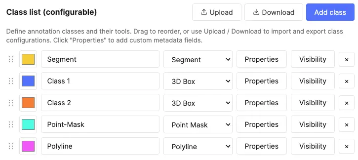
Tags
Tags capture structured attributes that describe something broader than a single annotation. There are two scopes per tag class:
- Item-level tags — apply to the whole item. Think topic, dataset partition, or any coarse attribute about the entire item. Shown at the top of the annotation panel.
- Point-cloud-level tags — apply to the point cloud scene within the item (e.g. capture session quality, domain, scene type). Shown under Point cloud tags sub-headers in the annotation panel.
Tag scope is configured per tag class in the admin settings. Tags are ideal for:
- Routing items through triage (e.g. "Highway", "Needs-Review", "Rain").
- Capturing ground-truth for whole-scene classification training.
- Filtering and grouping in dashboards downstream.
- Per-scene quality or metadata signals (point-cloud-level scope).
Tag names must be unique (case-insensitive); duplicate or empty names are silently reverted on blur.
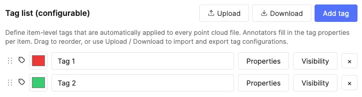
Properties
Geometry or point membership only tells a model where something is. Properties attach structured metadata — text, options, numbers — to each annotation, turning bare boxes and masks into rich training samples. Property names must be unique within their class or tag (case-insensitive); duplicate or empty names are silently reverted on blur. There are seven property types:
| Type | What it captures | Example |
|---|---|---|
| Free Text | Open-ended string input. | Object name, notes, IDs, manual corrections. |
| AI Text | Text auto-filled by the configured AI proxy (or an optional per-property override), guided by a per-property default prompt. See AI Autofill. Not available on tag classes (item or point-cloud scope). | Summary, key attributes, normalised label. |
| Select | Predefined option list. Toggle Allow multi-select to switch between dropdown (single) and checkbox (multi) behaviour. | Object category, scene type, quality bucket, multi-label tagging. |
| AI Select | Select field whose options are auto-chosen by the configured AI proxy (or an optional per-property override), guided by a per-property default prompt. Combines a predefined option list with AI-driven pre-selection. See AI Autofill. Not available on tag classes (item or point-cloud scope). | Auto-classification, object category, scene type, multi-label tagging. |
| Numeric | Number input with optional min, max, step, and unit. | Confidence score, count, distance, size. |
| Rating | Star picker backed by a numeric string value. Admins choose the maximum star count (3–10, default 5); 1 is the lowest selectable rating and empty / absent means unset. No AI hookup. Can be marked time-based like any other property — ratings then live in propertyKeyframes. | Frame quality, subjective severity, event usefulness, confidence stars. |
| Approval | Three-state verdict captured via a compact thumbs-up / thumbs-down picker. Stores "true" when approved, "false" when disapproved, and is omitted (or blank) when no verdict has been given. Carries no options, no AI configuration, no numeric or text-display options. Can be marked time-based like any other property — verdicts then live in propertyKeyframes instead of propertyValues. | Reviewer sign-off on an instance / tag, accept-reject for a detected event, QA verdict for a specific frame range. |
Common property options:
- Required — flags the annotation as incomplete until filled.
- Time-based — turns the property into a timeline of values that can change across the frames instead of a single constant value (e.g. an Action that switches from "Parked" to "Driving"). Keyframes are stored by frame index. Mutually exclusive with property visibility rules. See Time-Based Properties.
- Text Display (Free Text and AI Text) — a three-way toggle that sets how the field is presented; the three modes are mutually exclusive:
- Inline (default) — a compact resizable textarea shown directly in the popover / table cell. Best for short values.
- Modal — opens a roomy plain-text modal that stores the value exactly as typed (no formatting, no conversion). Best for long or structured plain text — e.g. raw HTML, JSON, or multi-line snippets you need preserved verbatim.
- Rich Text — opens a rich-text modal with inline formatting, useful for longer values like detailed descriptions or multi-paragraph captions.
- Enable Editing (AI Text and AI Select) — controls whether the AI output is editable at extraction time. For AI Text, when off, the model auto-extracts using the predefined prompt as-is; when on, annotators can tweak the prompt before triggering extraction. For AI Select, when off, the model's chosen option is applied directly; when on, annotators can review and override the AI's selection.
- AI Text / AI Select: Default Prompt — the system prompt the model receives when extraction runs. Annotators with prompt editing enabled can also override it per-run from the Edit prompt flow.
- AI Text / AI Select: Proxy / Model override — optional per-property routing. By default each AI property inherits the project-wide AI Property Proxy and model. In the property card, use the Proxy/Model override row to send this property only through a different proxy and/or model tier. Overrides are included when you copy a property to other classes. See Per-property proxy & model routing.
- Default value (Select only) — a starting option auto-populated on each new annotation.
- Hide From Roles / View-Only Roles — restrict who sees and edits this property.
- Info — optional helper text shown next to the field for annotator guidance.
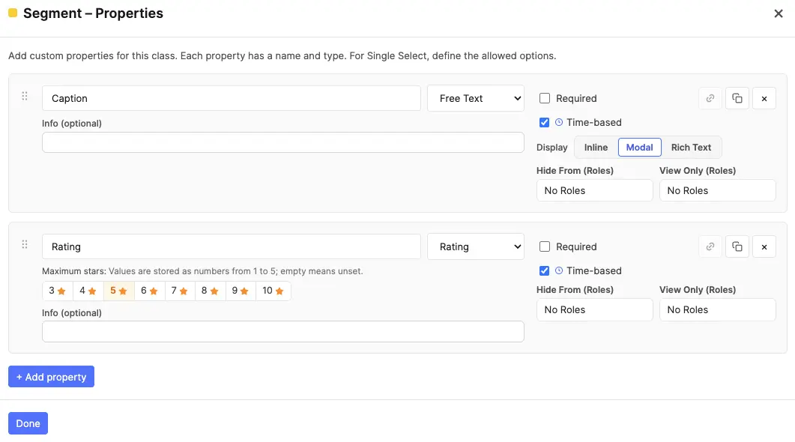
Per-property proxy & model routing
Every AI Text and AI Select property can optionally override the project defaults set under AI Proxy. In the property modal, below the Default System Prompt, the Proxy/Model override row exposes two dropdowns:
- Proxy — starts at Default (project AI proxy / model). Pick any team proxy whose domain routes to OpenAI or Gemini to override the project selection for this property only.
- Model — enabled once a non-default proxy is chosen. Lists the same three tiers as the project-level model picker for that provider (cheapest → most capable). Changing the override proxy resets the model to that provider's default middle tier.
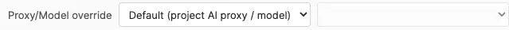
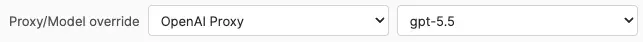
At extraction time the editor routes each property through its resolved proxy + model. Properties sharing the same route are batched into one API call; properties with different overrides (or a mix of overrides and project defaults) run as separate batches in sequence. A property with an override can still extract when the project default is unset — but any property without an override still requires the project AI Property Proxy to be configured.
Property Visibility Rules
A property visibility rule controls whether an entire property is visible and editable on a given annotation or tag, based on the value of one or more sibling Select / AI Select properties. Use this when a whole field only makes sense in a specific context — e.g. only show "Occlusion Type" when "Is Occluded" is "Yes", or only show "Vehicle Make" when "Object Category" is "Vehicle". This is the property-scope equivalent of option visibility rules: option rules hide individual options inside a Select; property rules hide the whole property.
Property visibility rules can be set on any property type (not just Select / AI Select). A Free Text, Numeric, Rating, AI Text, AI Select, Select, or Approval property can all be gated by a rule. The controller must still be a sibling Select-like property in the same class or tag class. Time-based properties are the one exception — see Time-Based Properties below; time-based ⇄ visibility rule is mutually exclusive.
Setting Up a Rule
- Open the property modal for a class or tag class.
- In the property card's right-hand header, click the chain icon next to the copy / delete buttons. The icon is only enabled when the class has at least one sibling Select-like property to use as a controller.
- An inline rule editor expands below the property card — same shape as the option-rule editor: choose All conditions match (AND) or Any condition matches (OR), then add one or more conditions picking a controller property and which value(s) it must hold.
- Click the chain icon again (or the editor's × / Remove rule button) to collapse / clear the rule.
The chain icon switches to a bolder blue tint when a rule is active, so you can spot rule-bearing properties at a glance in the property list. Hovering the icon shows a tooltip naming the controlling property and required value(s).
Behavior in the Editor
- Greyed-out field — when the rule is unsatisfied, the property still appears in the popover and table column (so annotators can see the field exists), but it's rendered dimmed with a not-allowed cursor. Hovering anywhere over the disabled field shows a tooltip explaining what controls it (e.g. "Controlled by: Object Category = Vehicle").
- Stored value cleared — the moment a rule becomes unsatisfied (e.g. the user changes a controller value), any value stored on that property is automatically cleared. The clear cascades: if A controls B, and B itself controls C, changing A clears both B and C in one step.
- Required validation suppressed — an inaccessible property is not counted as "missing required" even when marked Required. The red required indicator on the annotation / tag row only reactivates when the rule becomes satisfied and the field becomes editable again.
- AI extraction skipped — for AI Text / AI Select properties, the row-level Extract / Edit prompt controls, the per-property icons in the property popover, and the per-cell extract icons in the table skip any AI property whose rule is unsatisfied. The buttons appear / disappear immediately as the controller value changes, no popover reopen needed.
- Modal / Rich Text properties — a property gated by an unsatisfied rule renders as a plain "—" placeholder; its modal (plain-text or rich-text) cannot be opened.
- Default values disabled — when a Select property has a property visibility rule, the per-option "Default" checkboxes in the configuration screen are disabled. Defaults wouldn't make sense for a property that may not even be visible on instance creation; the configuration UI prevents the contradiction up-front.
For details on how property visibility rules interact with option visibility rules on the same property, see Property & Option Visibility Rules in the editor section.
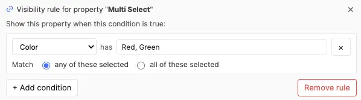
Time-Based Properties
By default a property holds one constant value for the whole instance — the box marking a car is always "Red". A time-based property instead records a timeline of values that change across the frames, so the same instance can carry state that evolves: an Action property might be "Idle", then "Driving" from one frame on, then "Parked" later. Each keyframe is stored by its frame index (not a timestamp). Conceptually this mirrors geometry keyframes, except the value is held constant between keyframes rather than interpolated — each property keyframe sets a new value that carries forward until the next one (or the end of the instance).
Enable it with the Time-based checkbox (marked with a small clock icon) in the property card, alongside Required and the Text Display toggle. It is available for every property type — Free Text, AI Text, Select, AI Select, Numeric, Rating, and Approval.
A few rules keep the feature predictable:
- Mutually exclusive with property visibility rules. A property can be time-based or gated by a visibility rule, not both — toggling one disables the other in the modal.
- Never a rule controller or dependent. Time-based Select properties don't appear in the controller pickers for option or property visibility rules, and the per-option chain icon is disabled on them. Their value isn't a single constant, so it can't drive a rule.
- Not on tag classes. Item- and point-cloud-scoped tags have no timeline, so the flag is stripped when a time-based property is copied to a tag class (it becomes a plain constant property there, and the copy picker flags the drop).
- Group / Order. Time-based properties are excluded from group-by / order-by in the panel (the value isn't constant). Where a same-named property exists as constant on one class and time-based on another, the group/order list labels the time-based variant with a "(time-based)" suffix so the two are distinguishable.
For how annotators set and read these values in the editor, see Time-Based Property Editing.
Copying properties between classes
Most projects end up with the same property defined on several classes — a Confidence Numeric on a handful, a Quality Single Select on every class. Recreating each one by hand is tedious and error-prone. Every property row in the Properties modal has a small copy icon next to the remove (×) button that opens a picker for replicating that property across other classes and tags in one step.
The picker lists every class and tag in the project. Each row carries a state badge that tells you what will happen if you select it:
| Row state | Meaning | What you can do |
|---|---|---|
| Will add | The target has no property by this name. Safe paste. | Tick the row to include it. |
| Already identical — will skip | The target already has a property with the same name and the same shape (type, options, prompt, numeric range, etc.). Pasting would be a no-op. | Locked off — nothing to do. |
| Conflict: name exists with different shape | The target has a property with the same name but a different definition (e.g. it's a Free Text on one class and a Select on another). | Tick the row, then choose Overwrite property to replace the target's definition with the source's, or Add as duplicate to add a second property with a " (2)" suffix on its name. |
| Source — excluded | This is the class you're copying from. | Always excluded; you can't copy a property onto itself. |
The footer shows a running summary ("3 to add · 1 to overwrite · 2 already identical") and the Copy button only enables once at least one row is in the to-add / to-overwrite / to-duplicate set.
A few details worth knowing:
- Copies are independent. Each paste mints a fresh property ID — there's no hidden link back to the source. Editing the original later does not propagate to the copies, and vice versa. Think of this as a faster "create the same property again" rather than a shared definition. The editor's table view and panel still aggregate properties across classes by name, so a Confidence column will show every class's annotation regardless of which class the property was originally created on.
- Visibility rules are remapped where possible. If the source property carries any option visibility rules or a property visibility rule, the copy tool tries to remap each rule's controller references against the target class's properties: it looks for a sibling property with the same name (case-insensitive) and whose option list contains every value the rule references. When all of a rule's conditions can be remapped this way, the rule carries through fully into the target. When even one condition cannot be remapped (controller absent, or its option list is missing required values), the entire rule is dropped on that target — partial remapping is refused because keeping a "best-effort" subset of an "all conditions match" rule would silently weaken it.
- Quiet on success — warns on drops. The copy modal stays silent when every rule carries through cleanly and only surfaces a per-target warning when one or more rules will actually be dropped, so you can spot the targets where shape divergence matters before confirming.
- Role visibility — the Copy role visibility (Hide From / View Only) checkbox at the top of the modal controls whether the source property's role rules travel with the copy. Turn it off when target classes have their own role-restriction conventions you don't want to overwrite. On the Overwrite property path, the target's existing role visibility is preserved when this option is off.
- AI Text / AI Select on tag classes — AI Text and AI Select properties are not supported on tag classes (item or point-cloud scope). When copying an AI Text property into a tag class, it is automatically downgraded to Free Text; when copying an AI Select property, it is downgraded to plain Select. In both cases the default prompt and "Enable Editing" setting are dropped, and the picker row flags this with a small note.
- Time-based on tag classes — a time-based property copied into a tag class loses its time-based flag and is pasted as a constant property, since tags have no timeline. The picker row notes this on its own line alongside any other downgrade warnings (e.g. an AI downgrade).
- Overwrite is destructive on the target's definition. Annotators' stored values for the property remain wired to the same row (the property's ID is preserved), but the type, options, and other settings switch to the source's. If a stored value no longer matches the new shape (e.g. an option that was removed from a Single Select), the destructive-warnings banner in the Properties modal will flag it at publish time.
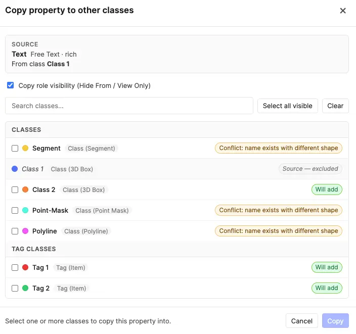
Option Visibility Rules
When a class or tag has multiple Select properties, you can create dependencies between them. An option visibility rule makes one property's options conditionally visible based on what is selected in another property of the same class/tag. This lets you build hierarchical relationships — for example only showing relevant subcategory options when a particular category is selected.
Option visibility rules apply to Select and AI Select properties alike. An AI Select property can be a controller or a dependent in a rule chain — the AI pre-selection respects the same filtering, and cascade clearing applies to AI-chosen values exactly as it does to manual ones.
When to Use
- Category → Subcategory — An "Object Category" property has 5 options (Person, Vehicle, Animal, Sign, Other); a "Subcategory" property has 20 options. Instead of showing all 20 regardless, you configure each subcategory option to only appear when its parent category is selected.
- Conditional attributes — A "Vehicle Type" dropdown controls which "Body Style" options are relevant.
- Multi-level filtering — Rules can reference multiple controller properties and combine with AND/OR logic for complex taxonomies.
Key Concepts
| Term | Meaning |
|---|---|
| Controller property | The Select property whose value determines what options appear on the dependent property. Must be a sibling (in the same class or tag class). |
| Dependent property | The Select property whose options are conditionally shown/hidden based on the controller's value. |
| Visibility rule | A per-option configuration that says "only show this option when condition X is met on the controller". |
| Unconditional option | An option with no visibility rule — always shown regardless of what the controller says. This is the default. |
Setting Up a Rule (Configuration Screen)
- Open the property modal for a class or tag class.
- On any Select property that has at least one sibling Select property, each option row shows a chain icon (⛓).
- Click the chain icon on the option you want to make conditional. The inline Visibility Rule Editor expands below that option.
- Click + Add condition. Choose the controller property from the dropdown, then select which of the controller's option values must be active for this option to be visible.
- For multi-condition rules, choose All (AND) or Any (OR) at the top to control how conditions combine.
- When done, click the collapse arrow or click the chain icon again to close the editor.
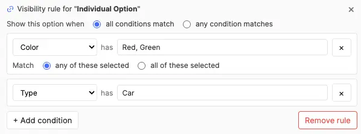
Rule Logic
- Single-select controller — The condition passes if the controller's stored value is any one of the listed values (implicit OR across the selected values in the rule picker).
- Multi-select controller — You choose any (at least one of the listed values is selected) or all (every listed value must be selected).
- Multiple conditions — Combined with a top-level All (every condition must pass) or Any (at least one must pass).
- Empty controller — An empty/blank controller value always counts as "unsatisfied" — the dependent option stays hidden.
Behavior in the Editor
Once rules are published, annotators see them enforced immediately in both the property popover and the table view:
- Option filtering — The dependent property's dropdown only shows options whose rule is currently satisfied by the controller's value on that same row (annotation or tag).
- Cascade clearing — If the annotator changes the controller value and a previously-selected dependent option is no longer valid, it is automatically cleared. This cascades: if A controls B and B controls C, changing A can clear both B and C in one step.
- Controller indicator — Dependent properties show a small chain icon on their label with a tooltip listing which properties control their options (e.g. "Options here are filtered by: Object Category, Vehicle Type").
- Config-triggered cleanup — If an admin changes rules after annotations already exist, the next time an annotator opens an item, any stored values that violate the new rules are cleaned in memory. The cleanup persists on the annotator's next save.
Interaction with Default Values
Default values and visibility rules are mutually exclusive on the same option. An option marked as Default cannot have a visibility rule, and vice versa. The configuration UI enforces this:
- If "Default" is checked on an option, the chain icon is disabled (tooltip explains why).
- If a visibility rule exists on an option, the Default checkbox is disabled.
This prevents the scenario where a default value would be immediately cascade-cleared on instance creation because its rule isn't satisfied.
Cross-Property Copy
When copying a property that has visibility rules to another class, the copy tool attempts to remap each rule's controller references against the target class's properties. For a rule to carry through, every controller referenced by its conditions must exist in the target by name (case-insensitive) and the target controller's option list must contain every value the rule references. If even one condition can't be remapped, the entire rule is dropped on that target — partial remapping is refused because silently dropping conditions from an "all conditions match" rule would weaken its logic (e.g. A AND B collapsing to just A).
The copy modal stays quiet when every rule carries through cleanly, and surfaces a per-target warning only on targets where one or more rules will be dropped. The same name + shape check applies whether the rule is a per-option rule on this property or a property-level visibility rule. See Copying properties between classes for the full copy flow.
Broken References
If a controller property is deleted or its type is changed away from Select while a dependent still references it, the condition is shown with a red border and alert icon in the configuration screen. The broken condition is preserved during the config session so admins can see what happened. On publish, broken conditions are automatically stripped.
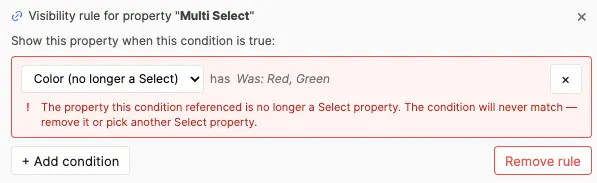
AI Proxy
All AI features communicate with external providers through SuperAnnotate Proxies. Proxies act as secure intermediaries: your team's API keys live server-side in SuperAnnotate and are never exposed to users in Config Screen or Editor sessions.
Why Proxies?
- Security — API keys stay server-side inside SuperAnnotate. Annotators never see or handle raw keys.
- Centralized management — Team admins create proxies and rotate api keys in one place; all project components inherit the change automatically.
Providers & usage
The provider is auto-detected from each proxy's allowed domain:
| Provider | Allowed Domain | Used For |
|---|---|---|
| OpenAI | api.openai.com | AI Text and AI Select property auto-fill |
| Gemini | generativelanguage.googleapis.com | AI Text and AI Select property auto-fill |
Set up proxies
1. Create proxies in SuperAnnotate
Before configuring this component, a team admin must create the required proxies in the SuperAnnotate platform:
- Open SuperAnnotate → navigate to your Team Setup.
- Go to the Security section → Proxies tab.
- Click Create Proxy. Name it and set the Allowed Domain to one of the supported endpoints mentioned above — the tool reads the hostname to detect which provider you've wired up:
- Under the Headers section, select a Secret from the list or create a new one. The format of the secret depends on the provider:
Provider Header Key Header Value OpenAI authorizationBearer <your-openai-key>Gemini x-goog-api-key<your-gemini-key> - Save the proxy. The proxy name is what you'll select in the configuration dropdown.
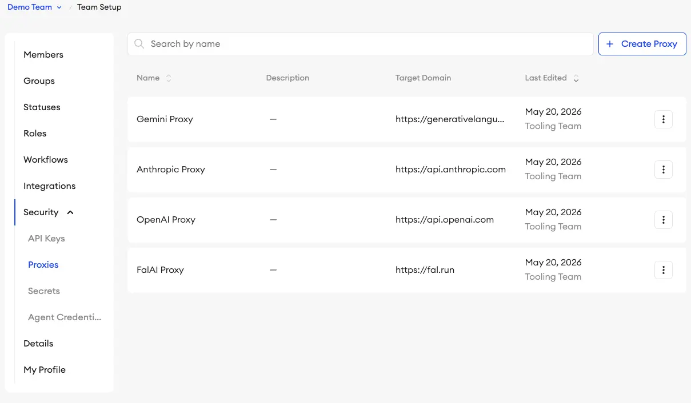
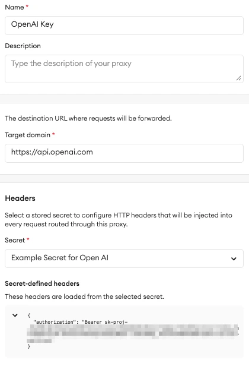
2. Select proxies in Configuration
In the component's Configuration screen, under the AI Property Proxy card, the dropdown is automatically populated with all proxies available in your team for the matching domains. Select the appropriate one and the Saved badge appears, along with a provider badge (OpenAI / Gemini), so you can confirm at a glance which provider the editor will route through.
Once the AI Property Proxy is selected, the Model dropdown next to it is unlocked. Three models are offered for each provider, sorted from cheapest/fastest to most capable — the middle option is selected by default. The currently available models are:
| Provider | Models (cheapest → most capable) |
|---|---|
| OpenAI | gpt-5.4-nano, gpt-5.4-mini, gpt-5.5 |
| Gemini | gemini-3.1-flash-lite, gemini-3.5-flash, gemini-3.1-pro-preview |
Changing the proxy to a different provider resets the model to that provider's default (middle tier). The selected model applies to all AI properties not having their own proxy/model override. Annotators do not see the selected provider/models in the editor.
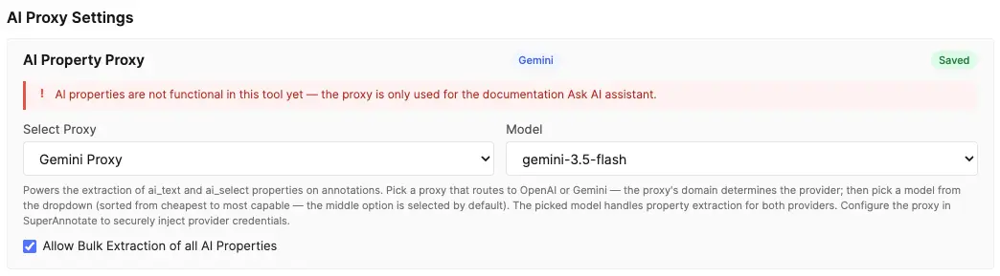
Ask AI in editor documentation
Ask AI is available only when this documentation is opened from a working item in the Editor. It is not available when the documentation is opened from the Configuration screen or as a standalone web page. In the Editor, Ask AI is an assistant chat panel that uses the configured AI Property Proxy and model to answer questions about this documentation.
Bulk annotation panel extraction toggle
Below the AI Property Proxy card, the checkbox Allow Bulk Extraction of all AI Properties controls whether annotators see the panel-header bulk extract control in the editor (see Bulk annotation panel extraction). It is off by default — enable it when you want annotators to run AI extraction across every visible row in the annotation panel in one action. The toggle does not change single-property, row-level, or table-cell extract controls; it only exposes the all-rows shortcut. Works in both Instance View and Table View. Requires an AI Property Proxy to be configured (or at least one AI property with a per-property override and runnable empty values).
Troubleshooting
- "No team available" — the component could not detect your team. Make sure it is loaded inside the SuperAnnotate platform.
- "Failed to load proxies" — a network error prevented the proxy list from loading. Refresh the page and try again.
- "AI Property Proxy is not configured" — return to Configuration and select an AI Property Proxy.
- "Unsupported AI proxy domain" — the selected proxy is not routed to a supported provider hostname. Recreate it with one of the endpoints listed in Providers & usage.
- Provider request fails — verify the API key stored in the SuperAnnotate proxy is valid, not revoked, and has sufficient quota or billing with the provider.
Project Instructions
Project Instructions are PDF guidance documents attached per role. Each role can have its own PDF, so annotators and QAs see the instructions relevant to their job. Admins can see and manage all instruction files.
- Upload one PDF per role — annotation conventions, edge cases, 3D-box sizing guidance, etc.
- Change any time — users pick up the new file on next load.
- The PDF is opened from the editor toolbar's Instructions button (when configured for the user's role).
Item Context
Item Context adds an optional strip of rich-text slots above the editor canvas. Use it for per-item system prompts, task-specific notes, or short instructions that arrive with the item or are written by annotators in the editor. Slot content supports the same rich text formatting as rich-text properties (bold, italic, headings, lists, blockquotes, code, links, and tables). Off by default; toggle it on from the Item Context card and click Configure slots… to manage the slot list.
- 1–10 slots per project — each one becomes a tab in the editor's Item Context section. Add slots with the + Add slot button; drag the handle to reorder; click the × to delete.
- Stable internal id — every slot gets an opaque id (e.g.
ctx-abc123) at creation. Renaming or reordering a slot in config never moves stored item data; values stay attached to the same id forever. The id is also exposed in name2id.json so JSONL authors can address slots by name on upload. - Unique slot names — names must be unique per project (case-insensitive), same rule as classes and tags.
- Per-role visibility — each slot has independent Hide From and View Only role pickers (same widget as class and tag visibility). Defaults for new slots are Hide From: No Roles and View Only: All Roles — i.e. visible read-only to everyone until admin opts a role into editing. If a role is on both lists, Hide From wins.
- Default section height — admin sets the initial height of the strip in the editor (100–500 px, default 200 px). Annotators can drag-resize it for their session, but resized values are not persisted — every reload starts at the admin default.
- Disabling is non-destructive — toggling Item Context off keeps the configured slots and any per-item values on disk; turning it back on later restores everything as it was.
- Deleting a slot leaves prior values on disk as orphans — they no longer appear in the editor but ride through subsequent saves and downloads. Adding a new slot later generates a fresh id; orphan values do not reattach automatically.
- Minimum one slot when enabled — the last slot can't be deleted while the feature is on. Disable Item Context to clear the strip entirely.
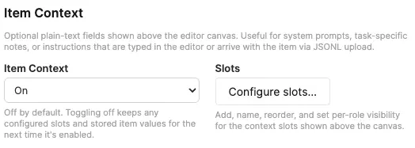
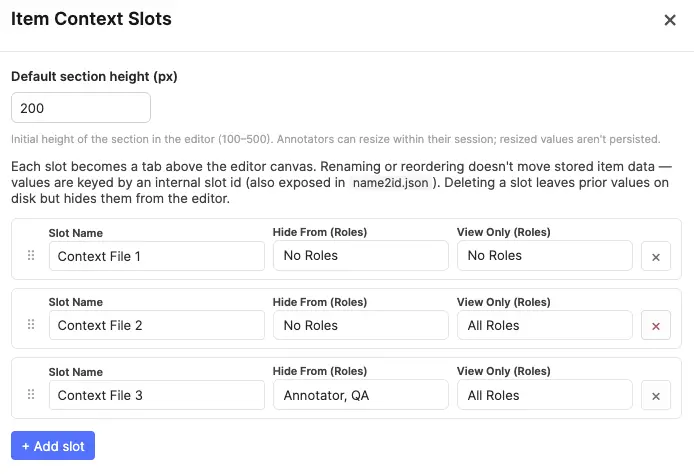
Import / Export
The whole configuration — classes (with tool types), tags, properties, access control, feature toggles, AI proxy selection, relationships — can be exported as a single JSON file and re-imported into another project.
- Export config — downloads a JSON file with the full schema. Version-control it alongside your project code for reproducibility.
- Import config — reads a previously exported config JSON and replaces the current configuration. A confirmation prompt is shown first.
- Use this to clone a proven configuration across projects, back up before a risky change, or share a template with another team.
The header also includes a Download name2id.json button that exports the name-to-ID mapping file directly from the config screen. This is the same name2id.json included in annotation ZIP downloads, but available here so admins can obtain it without creating items or entering the editor — useful when preparing JSONL imports or integrating with external pipelines.
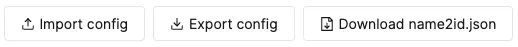
Editor
The editor is where the actual work happens — loading point-cloud frames, drawing and editing 3D boxes, painting Point Masks, filling properties, and reviewing. The layout puts the 3D viewer front-and-centre and surfaces the right controls for the task at hand.
Editor Layout
Three regions, each with a purpose:
- Top toolbar — tool / class selectors, coloring control, draw-method selector, Point Cloud Settings, upload, download, instructions, shortcuts, documentation, theme, fullscreen, undo / redo.
- Center viewer area — the 3D point cloud viewer, filling the full height of the workspace. Docked at the bottom is the frame timeline (with a drag grip to resize the split between viewer and timeline).
- Right annotation panel — Segments, 3D Boxes, Point Masks, Polylines, and tags, with grouping, ordering, filtering, properties, comments, and relationships.
Layout Conveniences
The top toolbar exposes several layout helpers:
- Fullscreen (F) — maximises the tool area within its host page to reduce visual clutter.
- Focus selected object (Shift+F) — frames the camera (and the Top / Front / Side panes) on the focused Box, currently painted Point Mask points, or current Polyline. Segments have no spatial target to frame.
- Collapse side views — a chevron on the viewer's edge collapses the Top / Front / Side rail to a single 3D view; a matching edge strip brings it back. See Layouts & Panes.
- Timeline resize grip — drag the grip at the top of the frame timeline to give the viewer or the timeline more room; double-click to reset.
- Dark mode toggle — flips the UI to a dark palette (canvas chrome follows the theme; the 3D space stays black). The same preference is applied to this documentation popup.
Point Cloud Sources
Point-cloud frames reach the editor through one of two paths:
- Uploaded — the user drops
.pcdfiles onto the upload zone or into the Upload modal. The bytes live in SuperAnnotate storage; the editor references them via auniqueName. - URL-linked — the JSONL payload contains a
urlwith aurlKind(public,presigned, orintegration). The editor signs / fetches the URL on load. See URL-linked point clouds.
Both kinds are equally annotatable. The difference is only where the bytes come from — the editor doesn't gate any feature on the source. Uploaded files are parsed off the main thread by a Web Worker, then decimated to a point budget for smooth rendering.
.pcd in ASCII and uncompressed binary layouts, extracting x/y/z plus optional intensity and rgb. binary_compressed (LZF) is out of scope. If a real frame cannot be fetched or parsed, the editor reports the load error; it does not substitute synthetic data.Source Colour Fields
Height and Solid colouring work with every valid point cloud. To expose Source Intensity, every point needs an intensity field. To expose Source RGB, every point needs a packed rgb field (the parser also accepts rgba). These source-dependent choices appear only while viewing a frame that provides their respective field; a sequence may therefore offer different choices on different frames.
For the supported packed-RGB convention, rgb is one 4-byte float whose bits encode 0x00RRGGBB, rather than three separate columns. For example, this ASCII PCD row carries an intensity of 0.82 and packed RGB bits 0x00FF8000 (orange):
FIELDS x y z intensity rgb
SIZE 4 4 4 4 4
TYPE F F F F F
COUNT 1 1 1 1 1
WIDTH 1
HEIGHT 1
POINTS 1
DATA ascii
1.25 -0.50 2.00 0.82 2.3463969e-38In-Editor Upload
When the user's role is on the Upload Files allow-list, the Upload button on the top toolbar opens the Add point cloud frames modal. Drag or browse for one or more .pcd files — each file becomes one frame in the scene's ordered frame sequence (uploading multiple files at once builds the sequence in order). The first upload creates the item's one scene; later uploads append frames to that same scene and never create another scene.
Accepted format: PCD (ASCII / uncompressed binary). Other file types are rejected with a banner.
The empty drop zone shown when an item has no point cloud yet supports drag-and-drop directly onto the canvas in addition to the modal. It also offers example scenes: single-frame and 20-frame synthetic scenes with camera images, a 100-frame synthetic scene, and a five-frame road scene with built-in Dataset Ground elevations. Each creates a real, savable item so you can try drawing, editing, keyframing, playback, and ground-reference behaviour without your own sensor data. Uploading marks the item as having unsaved changes, so you are warned before leaving with un-persisted work.
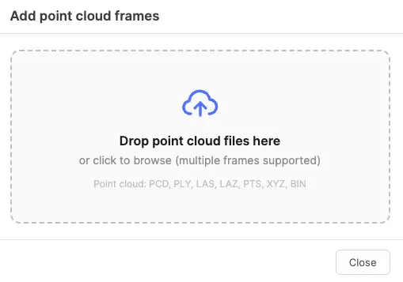
Frames & Scenes
A point-cloud item is a single scene made of an ordered sequence of frames. Each frame is one point-cloud file (typically one LiDAR sweep); playing or scrubbing the scene advances through the frames in order. There is no per-file tab strip — navigation happens on the frame timeline.
Frame Navigation
The frame timeline below the viewer is the primary navigation surface:
- Scrub — drag the playhead or click the ruler to jump to any frame; a tooltip shows the frame number while dragging.
- Step — , / . move to the previous / next frame; < / > jump to the first / last frame; a numeric Frame X / N field jumps directly.
- Play — Space plays the sequence at the chosen FPS. Playback waits for each frame to finish loading so the cloud, boxes, and Point Mask membership always update together — no skipping.
- Adding frames — use the Upload button; the new files extend the frame sequence.
Single-Frame Scenes
A scene containing one point-cloud frame uses a compact canvas-only editor. It omits the timeline, ruler, playback and frame-navigation controls, FPS, preload indicator, and Segment creation controls. 3D Boxes, Point Masks, Polylines, and properties still work normally on frame 1; time-based properties resolve to their single frame-1 value.
Panel & Annotations
Annotations live once at the scene level and span the frame sequence through a visible range. A Segment has no geometry; a 3D Box changes through interpolated pose keyframes; Point Masks and Polylines keep explicit, non-interpolated data for each frame. The annotation panel lists every annotation type; item-level tags appear at the top, and point-cloud-scoped tags appear under a Point cloud tags sub-header.
Item Context
When Item Context is enabled in the project configuration, the editor renders a dedicated section at the very top of the canvas — above the viewer area — for the configured slots.
- Tab strip — one tab per visible slot, in the order set in config. The active tab uses a neutral grey accent stripe.
- Collapse / expand — a chevron button at the leading edge of the tab strip collapses the section down to just the tab row (hiding toolbar, content, and resize handle). The chevron is sticky-left and stays visible when the tab strip overflows and you scroll horizontally. When collapsed, clicking the chevron or the empty area of the strip expands the section; clicking a non-active tab expands and switches to that tab in a single action; clicking the active tab simply expands. Always starts expanded on load.
- Rich text editing — editable slots show a formatting toolbar between the tabs and content area. Available formatting: bold, italic, headings (H1/H2), bullet lists, numbered lists, blockquotes, inline code, code blocks, hyperlinks, and tables. The toolbar sits within the section's height and does not consume additional space.
- Read-only slots — slots set to View Only for the user's role render with a light grey background and no toolbar. Rich text content still renders fully formatted (headings, lists, tables, etc.) — only editing is disabled.
- Hidden slots — slots with the user's role on the Hide From list are not shown in the strip at all. If every slot is hidden for the user, the entire Item Context section disappears.
- Resize handle — drag the thin grey grip at the bottom of the section to resize it (clamped between roughly 80 px and 50 % of the editor height). The resized height is session-only; reloading the item resets to the admin's default height.
- Autosave — edits feed the same debounced auto-save pipeline as the rest of the editor; the unsaved-changes indicator picks them up like any other change.
- Source of values — slot content is either typed directly by the annotator or pre-populated when the item arrives via JSONL upload (see the payload schema).
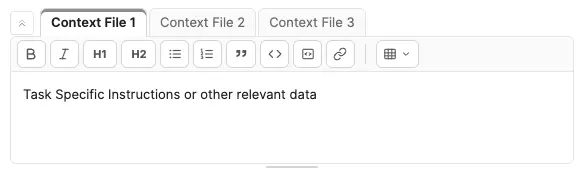
Top Toolbar
Left to right, the top toolbar exposes:
- Tool selector — Select / Segment / 3D Box / Point Mask / Polyline.
- Class selector — pick the active class for new annotations. Searchable; first nine classes carry 1–9 shortcuts.
- Coloring controls (Height / Source Intensity / Source RGB / Solid) select the canvas point colouring. The source modes appear only when the active frame contains their required fields; see Source Colour Fields.
- Draw method — selector for the 3D-box drawing method (3-click ↔ drag). The same method is reused when placing a Point Mask Constraint Box.
- Ground reference — selector for the surface used to place new 3D Boxes, Constraint Boxes, and Polylines: Dataset Ground, Auto Ground, World z=0, or Custom Z. See Ground Reference.
- Point Cloud Settings — dropdown holding Point size and the Dynamic box height toggle. See Point Cloud Settings.
- Upload — opens the upload modal (when allowed).
- Download — exports the current item as a ZIP (when allowed). See Download / Export.
- Instructions — opens the Project Instructions PDF for the user's role (when uploaded).
- Keyboard shortcuts — opens an in-app cheat sheet on hover.
- Documentation — opens this popup.
- Dark mode — toggles the UI palette (preference is saved per browser).
- Fullscreen (F) — expands the tool within its host.
- Undo / Redo — see Undo / Redo.
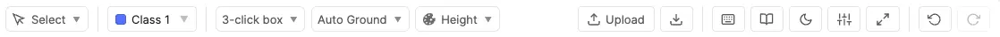
Tool Selector
Five tools, plus class-driven auto-pair behaviour:
| Tool | Shortcut | Use |
|---|---|---|
| Select | V | Free cursor — click a Box, painted Point Mask point, or Polyline to select and focus its annotation. Boxes expose pose editing through on-box handles, the numeric panel, and shortcuts; Point Mask membership and Polyline vertices change only after entering their dedicated edit modes. No new annotations are created. |
| Segment | G | Arm the geometry-free Segment tool. Creation is explicit: click + Segment in the timeline to add an instance from the current frame through the final frame. |
| 3D Box | B | Draw a cuboid_3d on the active ground reference using the current draw method (3-click or drag). Auto-selects when picking a 3D-Box class. |
| Point Mask | M | Paint projected point-cloud points to create a point_mask, or edit the mask whose brush button is active. Opens a gear control in the 3D pane for mask settings. Auto-selects when picking a Point Mask class. |
| Polyline | L | Click world-space vertices. Double-click or Enter commits; Esc cancels; Backspace removes the last draft vertex. Existing Polylines enter their dedicated edit state through the pencil button in the timeline or annotation panel. |
Shift+B toggles between the two box draw methods (and selects the 3D Box tool). Starting a draw and then switching tool or class discards the in-progress geometry. Switching away from Point Mask also ends active mask editing. (W / A / S / D and Q / E are reserved for camera navigation.)
Class Selector
The class dropdown lists every class visible to the user's role, with a colour swatch, the class name, and a shortcut badge for the first nine. Type to filter by name. Selecting a class:
- Sets it as the active class for new annotations.
- Auto-selects the class's matching Segment, 3D Box, Point Mask, or Polyline tool.
- Classes flagged as view-only for the user's role show a small lock icon and cannot be selected for new annotations.
Point Cloud Viewer
The center area is an interactive WebGL (Three.js) scene with world +Z up. Visible 3D boxes use wireframe and translucent fill; Point Mask members tint points; Polylines render as class-colored world-space paths. Segments have no viewer geometry.
Navigation
The 3D view is driven by both mouse and keyboard. An always-on cheat-sheet strip in the 3D view's top-right corner summarises the main moves at a glance.
- Orbit — middle-drag rotates the camera around the pivot, which sits on the ground plane so the floor stays centred as you tilt. Left-drag is reserved for selection, box editing, and drawing. Q / E orbit left / right — tap for a small step, hold to spin smoothly.
- Pan — right-drag slides the view along the ground, and W / A / S / D pan while held. Hold Shift for vertical panning: Shift+right-drag or Shift+W / S moves the view straight up / down.
- Zoom — the mouse wheel zooms, clamped to sensible min / max distances so the scene never collapses or flies away.
- Re-center — Shift+F snaps the ortho panes and camera view back onto the focused object after you've panned or zoomed away in a pane. (Selecting an object already frames it — see Focusing & Tracking.)
Keyboard orbit and pan (Q/E, W/A/S/D) act on the 3D view only. In the Top / Front / Side ortho panes, right-drag pans in the pane's plane and the wheel zooms.
Layouts & Panes
The viewer shows a large perspective 3D view on the left plus a right-hand rail of three orthographic panes — Top, Front, and Side. A chevron on the viewer edge collapses the rail to a 3D-only view; a thin edge strip with a chevron brings it back. Only the pane under the cursor is "active" for navigation and editing, and each pane fits its content aspect-aware to its own size.
Pane orientation. A focused 3D Box uses object-aligned axes. Point Masks, Polylines, Segments, and all creation tools use world axes; entering a creation tool preserves the panes' centre and zoom while clearing a previous box-aligned orientation. Segment focus is semantic only: it restores world axes but never re-centres a spatial view.
You can edit a box directly in whichever pane you're hovering, so move / resize / rotate all work from the 3D view or any ortho pane (see Selecting & Editing Boxes).
Point Mask Paint / Erase also works in the 3D, Top, Front, and Side panes. Brush, lasso, and rectangle selections are evaluated in the active pane's screen projection, so every point projected inside the gesture is included through depth unless a Constraint Box limits the operation.
Ground-plane drawing eligibility. The perspective view always permits 3D Box, Constraint Box, and Polyline placement. Orthographic panes are enabled only when their camera ray can stably intersect the active ground reference: abs(cameraDirection · groundNormal) ≥ sin(10°) (about 0.174). An ineligible ortho pane shows a disabled cursor and a short message in that pane's bottom-right corner. This is camera-angle based rather than hard-coded by pane name, so a rotated ortho view may become eligible. Shift-based vertical Polyline placement is available only in the perspective view.
Focusing & Tracking
The viewer maintains three related states: selected (the active annotation row/object), focused (the annotation whose geometry is tracked), and editing (an explicit geometry-changing mode). Selection normally moves focus to the same annotation. Focus is spatial for a Box, Point Mask, or Polyline with current-frame geometry; it is semantic only for a Segment.
- Selecting focuses. Selecting from the canvas, annotation panel, or timeline sets both selection and focus. A current-frame Box, Point Mask, or Polyline is framed once in the perspective view and in the ortho panes. Boxes align ortho panes to their local axes; Point Masks and Polylines use world axes. A Segment selects and focuses semantically, returning the ortho panes to world axes without spatial framing.
- Seeking with selection. Selecting an annotation outside its range seeks to its start; selecting one already in range keeps the current frame.
- Re-centering with Shift+F. If you pan or zoom away from focused geometry, press Shift+F to frame it again. It does not change selection. Segments have no spatial geometry, so this shortcut does not frame a Segment.
- Deselecting. Clearing a canvas selection retains the last geometry focus, allowing tracking to continue without leaving the current framing. Selecting a creation tool clears the previous selection and restores world-axis context.
- Tracking across frames. As focused Box, Point Mask, or Polyline geometry changes through its visible range, the ortho panes re-centre while preserving zoom; the camera image tracks the same representative world point. Playback and frame stepping never continually move the perspective camera. Empty or out-of-range Mask/Polyline frames hold the last view, then resume tracking when geometry reappears.
Point Mask focus. Clicking a Point Mask's brush edit button focuses its painted points on the current frame. If the playhead is already anywhere inside the mask's visible range, the frame is kept—even when that frame is empty. An empty frame has no geometry to frame, so the current camera position is intentionally retained until you paint, seek to a filled frame, or focus another annotation. If the playhead is outside the range, editing seeks to the range's first frame.
Editing and ortho isolation. A selected Box is directly editable with Select; a selected Point Mask or Polyline requires its brush/pencil button to enter editing. Editing receives the strongest emphasis, selection is softer, and focus can remain after a blank-canvas deselect. During Box or Polyline editing, every other spatial Box/Polyline shape is hidden in Top / Front / Side. During in-range Point Mask editing—even on an empty frame—all Boxes and Polylines are hidden there while Point Mask colours remain visible. Perspective always shows every shape. Out-of-range edit targets and Segments do not isolate panes.
Camera Reference Images
When a scene ships with calibrated cameras and per-frame images (see the calibration payload), the viewer's right rail becomes a 1×4 column — a reference-image panel on top, then the Top / Front / Side ortho panes below (equal quarter-height cells). If the scene has no cameras, the rail stays 1×3 as usual, and the panel never appears when the rail is collapsed to a 3D-only view.
- Projected geometry, not stored image shapes — 3D Boxes and current-frame Polylines are projected live from world space. Polyline segments crossing the camera plane are clipped behind the camera. Segments are geometry-free and never appear here.
- Follows the focused object — like the ortho panes, the image view tracks focused Box, Point Mask, or Polyline geometry. It keeps the selected camera while the geometry's representative point remains inside that image; only when it leaves does it switch to the loaded in-bounds camera with the smallest positive depth. If no camera contains the point, the current image stays in place. It preserves user zoom while re-centring each frame.
- Camera switcher — a dropdown in the panel header selects which camera to show when a scene has more than one (a single-camera scene shows a static label instead). Each camera renders that frame's image for that sensor.
- Zoom & pan — scroll to zoom toward the cursor; right-drag pans; double-click resets. The image scales to fit while preserving aspect; overlays are clipped to the photo.
- Frame-synced — images load and swap together with the point cloud on every scrub or playback step. Decoded images participate in the same byte-budgeted nearby ready window as clouds, so imagery and projected Boxes/Polylines never drift from the active frame.
- Calibration check (pts toggle) — an optional overlay projects a sample of the LiDAR points onto the image (colored by depth). It's a quick way to confirm a dataset's intrinsics / extrinsics line up before trusting the box projection.
Lens models supported for projection: pinhole (with optional Brown–Conrady radial + tangential distortion) and fisheye (Kannala–Brandt). Calibration is provided by the ingested data — there is no in-editor calibration editor in this version.
Coloring & Point Size
The Coloring control sets how points are shaded:
- Height — a Turbo colormap over the Z coordinate (good for reading ground vs. tall structures).
- Source Intensity — LiDAR return intensity, normalised 0–1 across the current frame. Available only when every point was supplied with an
intensityfield. - Source RGB — the source file's per-point colour. Available only when every point was supplied with a packed
rgb(orrgba) field. - Solid — a single flat colour.
Source Intensity and Source RGB disappear when the frame does not contain the corresponding field. If you navigate to such a frame while using one, the viewer returns to Height colouring. See Source Colour Fields for the accepted PCD layout.
Point size lives in the Point Cloud Settings dropdown. All canvas chrome (pane labels, ortho backgrounds, timeline) follows the app's light / dark theme; the 3D space itself stays black. The selected box is drawn most prominently, a focused-but-unselected box a step softer, and the other boxes dimmed, so the active object always stands out.
Selecting & Editing Boxes
With the Select tool (V), click a box to select it to start moving, resizing or rotating it.
- Move — drag the box body. In the 3D view it slides along the ground (X-Y); hold Shift mid-drag to move it straight up / down instead. In an ortho pane it moves within that pane's plane.
- Resize — drag an edge / face / corner. In the 3D view each face carries a small handle on its center you can drag to grow or shrink the box along one axis while the opposite face stays pinned. In an ortho pane, drag near an edge to resize one axis or near a corner to resize two at once; directional cursors show the axis. A minimum dimension keeps a box from collapsing to a plane.
- Rotate — drag a rotation ring. In the 3D view a single ring rotates the box about its own vertical axis (yaw); enable Allow tilt to also expose pitch and roll rings. Each ortho pane shows one ring that rotates about that pane's viewing axis — Top rotates yaw, Front rotates roll, Side rotates pitch.
Set the front (heading). Hold Alt and click a side face in the 3D view to make it the box's front. Eligible faces highlight on Alt-hover; the top and bottom faces are never used for heading - for that you would need to rotate the box manually.
Auto-fit. Press T (or the Auto-fit button in the pose panel) to shrink the selected box tightly around the points inside it. Auto-fit only tightens — it never grows the box — and ignores ground / near-floor points so it hugs the actual object.
After any move, resize, or rotate, the ortho panes and camera view re-center on the object, keeping your zoom unless the box no longer fits (then that pane zooms out just enough to frame it).
Rotation & ground helpers. R / Shift+R rotate the box 90°; brackets nudge yaw. Press Z to level and rest the box on the active ground reference, or Shift+Z to drop its lowest point while preserving tilt. The pose-panel Ground and Drop buttons remain available; see Ground Reference for their exact behavior on slopes.
A numeric pose panel in the corner shows the selected box's position (x/y/z), dimensions (length/width/height), and rotation (roll/pitch/yaw in degrees) and edits them two-way, alongside the Auto-fit and Ground buttons. On-box handles stay a consistent size across panes and zoom levels.
Keyframes
A 3D box can hold multiple keyframes to track an object as it moves across the frame sequence. Each keyframe stores a (frame, pose) pair — the full cuboid_3d pose (position, dimensions, rotation) at that frame index. Between keyframes the pose is interpolated, so a handful of poses describe smooth motion without creating a separate box per frame.
A keyframe diamond is shown on the frame timeline at every frame where a pose is explicitly stored. Re-posing a box at a new frame (via the on-box handles, numeric panel, rotate / snap shortcuts, or a fresh draw) creates a keyframe there; the object's starting pose is the anchor and shows no redundant diamond at its first frame.
Interpolation
Keyframes are sparse: you set the pose at a handful of frames and the editor fills in everything between them. For every frame inside a box's visible range, the displayed pose is computed by linear interpolation between the nearest keyframe before and after the current frame.
- Between two keyframes — position and dimensions move in a straight line at a constant rate; each rotation axis interpolates along the shortest angle. A box at one spot on frame 10 and another on frame 40 glides smoothly across the frames in between.
- Before the first / after the last keyframe — the pose is clamped (held constant) at the nearest keyframe's value, so the box never disappears or drifts outside the keyframed span.
- Outside visible ranges — the box is simply not drawn. Interpolation only happens within a visible range.
Editing a range boundary
When you drag the start or end of a visible range inward and that move drops keyframes that fell outside the new boundary, the editor first computes the interpolated pose at the new boundary and writes it as a fresh keyframe. This keeps the box's motion continuous instead of snapping to whatever keyframe is left — moving a boundary never causes a visible "jump."
Point Cloud Settings
The Point Cloud Settings dropdown in the top toolbar holds the viewer's rendering / drawing preferences:
- Point size — slider controlling the on-screen size of rendered points.
- Dynamic box height — a checkbox (on by default). When enabled, drawing a 3D box sets its height to include the tallest point that falls inside the box's X-Y footprint (scanned from the decimated cloud with a small ~5% margin so the point sits just inside the top face). The bottom starts on the active ground reference. If no points fall inside the footprint, a fallback height of 0.3 m is used. Applied at draw time (including live preview while drawing); turn it off to draw with a fixed default height.
- Allow tilt (pitch / roll) — a checkbox (off by default). When off, the 3D view's rotation ring only lets you change yaw (rotation about the box's vertical axis), which keeps most road-scene boxes upright. Turn it on to also show pitch and roll rings for full 3-axis rotation in the 3D view.
- Scale bars — a checkbox (off by default). When on, each ortho pane draws a small map-style ruler showing the current on-screen scale, handy for reading a box's real size at a glance.
- Show ground guide — keeps a translucent grid over the active ground reference, across the current cloud's full X-Y extent. It is useful for confirming an Auto or Custom reference before drawing.
Coloring is set from its own toolbar control (see Coloring), and the Top / Front / Side rail is collapsed from the viewer edge (see Layouts).
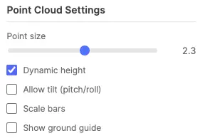
Point Mask Settings
When the Point Mask tool is active, a gear button appears beneath the 3D pane label. It controls how the next gesture changes points:
- Mode — Paint / Erase — Paint adds unclaimed points to the active mask; Erase removes only points belonging to the mask currently being edited. Press X to toggle. Erase cannot create a new instance.
- Shape — Brush — hold left mouse and sweep a circular screen-space brush. Its live ring and point-colour preview show what will be committed on release.
- Shape — Lasso — hold left mouse and draw a free-form enclosure; every projected point inside it previews live and commits on release.
- Shape — Rectangle — drag a rectangular enclosure; every projected point inside it previews live and commits on release.
- Brush size — radius of the circular brush in screen pixels, from 4 to 120. Use the slider or press [ / ]; holding a bracket key repeats with acceleration. The value remains available even while Lasso or Rectangle is selected, ready for the next switch back to Brush.
- Constraint Box — temporarily limits Paint and Erase to points physically inside a 3D region. See below.
All three shapes operate through the active camera projection: depth does not stop the selection at the first visible surface. Point ownership is exclusive, so painting over points already assigned to another Point Mask leaves them unchanged and reports how many were skipped.
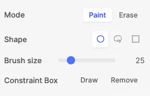
Constraint Box
The yellow Constraint Box is a temporary painting aid—not an annotation. It has no class, instance number, properties, timeline row, comments, relationships, or exported data. It only filters Point Mask gestures on the current frame: projected points must also lie physically inside the box to be painted or erased.
- Choose Draw in Point Mask settings or press C. Placement reuses the current 3D-box draw method (3-click or drag), including fixed / dynamic height behaviour. Completing the box returns to Point Mask painting; drawing another replaces the existing constraint.
- While normal Point Mask painting is active, the six perspective-view face handles resize the box along its local axes. Constraint resizing is intentionally unavailable in Top / Front / Side panes, and the helper cannot be moved or rotated; redraw it to change its position or orientation.
- Choose Remove or press Shift+C to clear it. Pressing X while placing a constraint cancels constraint mode and returns to Paint.
- The helper is frame-local and disappears automatically when you seek to another frame. It is also discarded when the viewer is torn down, and is never saved or exported.
Polyline Drawing & Editing
Polylines are 3D world-space paths. A new instance starts and ends on the current frame and stores at least two raw { x, y, z } vertices. A round ghost vertex previews placement before the first click. Normal placement uses the active ground reference; in Perspective, hold Shift before the first click to freeze the ghost's X/Y and raise or lower Z on a vertical plane. The same Shift behavior remains available after each committed draft vertex.
- Commit / cancel — double-click or Enter commits; Esc keeps the old geometry when replacing a line; Backspace removes the last draft vertex.
- Edit filled frames — drag a visible vertex; click a segment to insert a vertex and drag it; double-click a vertex to remove it. Removing from a two-vertex line clears that frame.
- Ground a filled frame — while editing, press Z to set every vertex to the active ground height at the first vertex, or Shift+Z to translate the entire line until its lowest vertex reaches that height without changing its shape.
- Replace — click blank canvas while editing a filled frame to start a replacement draft. The old line is muted until the new draft commits or is cancelled.
- Edit mode — use the pencil button beside the Polyline in the timeline, Instance View, or Table View. Its blue active state and the viewer's Editing: #N Class chip identify the target; click it again to stop.
- Empty frames — extending the visible range creates hollow frames. Drawing there creates an independent frame entry. There is no vertex correspondence or interpolation across frames.
- Range safety — start/end resizing prunes geometry and property keyframes outside the new range. Whole-range movement is blocked because frame-local geometry cannot safely be retimed. If pruning or vertex deletion leaves no filled frame, the instance is deleted.
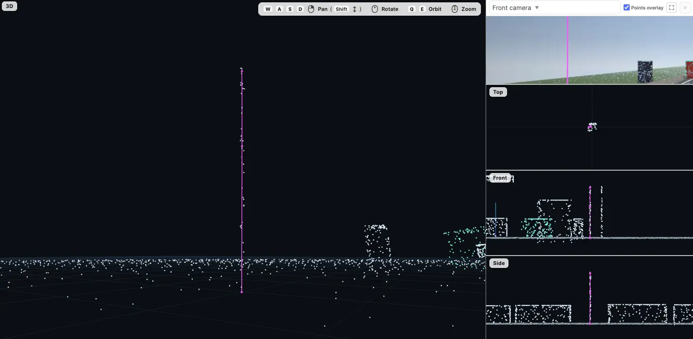
Segments
A Segment is a timeline-only annotation: it carries a class, visible range, properties, time-based property changes, comments, relationships, and visibility, but never has 3D geometry, handles, a camera-image projection, or a filled/empty-frame state. Use it for an event, interval, scene condition, or other frame-range label that does not describe a spatial object.
- Select a writable Segment class or press G, then click + Segment immediately after the FPS field in the timeline transport.
- The new Segment starts at the current frame and ends at the scene's last frame. Select its row or panel entry to edit its class properties, comments, relationships, and range.
- Drag either range boundary to trim or extend it. Unlike all geometry types, drag the coloured Segment body to move its entire range. Its time-based property keyframes shift by the same frame offset; property values remain attached to the interval rather than their former absolute frame numbers.
- Selecting a Segment moves semantic focus to that annotation and restores world-axis ortho panes, but does not re-centre a 3D or camera-image view because the Segment has no position.
Range rule. Segments are the only annotations that support whole-range movement. Boxes, Point Masks, and Polylines are authored against concrete source frames, so their timeline bars can only be resized at their start/end boundaries. Boundary trimming prunes data outside the new range; extending a Mask or Polyline creates valid empty frames that must be filled explicitly.
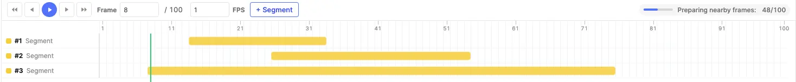
Ground Reference
The Ground reference control in the top toolbar selects the surface used to place new 3D Boxes, Point Mask Constraint Boxes, and Polylines. It also drives the viewer pivot, grid, Dynamic box height, and Ground / Drop helpers. The reference is a drawing aid: annotation coordinates remain in the original point-cloud coordinate system.
| Mode | Use |
|---|---|
| Dataset Ground | An author-supplied horizontal groundZ value from the imported scene. A frame may override that value. This is the default whenever the scene provides it. |
| Auto Ground | Detects one dominant, near-horizontal ground plane from the current point cloud. It is the default when Dataset Ground is not supplied. |
| World z=0 | The fixed coordinate plane. Choose it when z=0 is the intended drawing elevation. |
| Custom Z | A horizontal session-only elevation for exceptional areas such as a bridge deck. It starts at 0.00 m, accepts values from -50.00 m through +50.00 m in 0.01 m increments, and is never saved into the scene. |
Auto Ground. Detection runs as part of loading every frame, so changing modes does not trigger a second wait. It divides the complete parsed cloud into an adaptive X-Y grid, takes low-elevation samples from each cell, then fits one dominant plane. The editor checks that plane's spatial coverage, point support, fit error, and tilt before accepting it. Auto Ground is intended for one broadly consistent road or floor surface—not multiple levels, bridge decks, steep terrain, or vertical structures—and accepts a tilt of up to 15°. Sparse, ambiguous, vertical, or steeper surfaces are rejected. If Auto Ground is unavailable for a frame, the editor warns once and uses Dataset Ground when available, otherwise World z=0. Auto results are session-only and are not written to exports.
Sloped surfaces and upright boxes. Auto Ground can be tilted, so a first placement point can be found at the plane height for its X-Y position even where no return is visible. New boxes remain upright: after the first click, a box or Constraint Box locks a horizontal base at that click's elevation for the rest of that gesture. On a slope, the box is not rotated to match the road.
Ground and Drop. For a selected box, Z / Ground clears pitch and roll and puts the bottom-face centre at the active ground height below the box centre. Shift+Z / Drop preserves rotation and moves the lowest box corner to that same centre-position height. Therefore Ground and Drop give the same position for an upright box; they differ only when the box is tilted. For a filled Polyline in edit mode, Ground flattens every vertex to the active ground height at its first vertex, while Drop preserves its shape and lowers its lowest vertex to that height.
Frame Timeline
A frame-based timeline is docked below the viewer as the primary navigation surface. It draws a discrete bin per frame, one row per object over its visible range, and drives playback across the scene. A drag grip at its top edge resizes the split between viewer and timeline (double-click to reset); the row area scrolls internally when there are many objects.
Controls
The transport bar provides:
- Play / pause and single-frame step (previous / next) buttons, plus jump-to-first / jump-to-last.
- An editable Frame X / N field (1-based) that jumps to a typed frame on Enter.
- A numeric FPS field controlling playback speed.
- + Segment — immediately after FPS; enabled when the active class is a writable Segment class and creates its range from the current frame through the final frame.
- A draggable, green playhead and a clickable ruler; a floating Frame N tooltip appears while scrubbing the ruler or resizing a segment.
- A compact nearby-frame loading chip (right of the transport). On first load it reports the byte-budgeted render-ready window, then hides after completion. Later window refills stay silent unless they remain incomplete for about 1.5 seconds; a requested frame that itself is slow always receives the central loading indicator.
Object Rows
Each Segment, 3D Box, Point Mask, or Polyline appears as a row spanning its visible frame range:
- Visible range — a coloured segment in the object's class colour, anchored to bin centres.
- Range handles — trim or extend the range. Point Mask and Polyline entries outside a trimmed range are pruned; expansion introduces valid empty frames. Box trimming preserves the pose shown at a new boundary, then prunes now-out-of-range pose/property keyframes.
- Whole-range movement — only a Segment body can be dragged. This shifts its range and time-based property keyframes together. 3D Box, Point Mask, and Polyline bodies cannot be retimed because their spatial data belongs to concrete source frames.
- Box keyframe diamonds — mark frames where a 3D Box pose is explicitly stored (interpolated in between). Point Masks do not use geometry keyframes.
- Property-keyframe circles — a thin lane above the bar marks frames where any time-based property value changes.
- Row click — clicking a row selects the object and seeks the playhead to that frame (even outside the visible range).
- Point Mask edit button — the brush button beside the instance label enters mask editing; its blue active state and the viewer's Editing: #N Class chip identify the target. Click the active button again to stop editing.
- Polyline edit button — the pencil button provides the same explicit editing state for current-frame vertex dragging, insertion, deletion, replacement, or drawing an empty in-range frame.
Polyline filled and empty frames
A narrow, full-bar-height class-colored stroke is shown for every in-range frame over the class-colored range: solid means the frame stores at least two vertices; hollow means it is an empty frame ready for independent drawing. Unlike box pose keyframes, these entries do not interpolate.
Point Mask filled and empty frames
A Point Mask has one ordinary object-level visible range, but its point membership is stored separately on every frame. The timeline therefore shows a rounded marker for every frame inside the range:
- Filled square — that frame contains one or more points assigned to the mask. The hover tooltip reports the painted-point count.
- Hollow square — the mask instance is valid and visible on that frame, but currently contains zero painted points there.
- Outside the coloured range — the instance is not present and cannot be painted there until its range is adjusted.
Entering edit mode while already on an in-range empty frame keeps the playhead and camera where they are; it does not jump backward to a filled frame. Painting creates that frame's membership entry. Erasing every point removes the entry and returns the frame to hollow; if no painted frame remains anywhere in the instance, the Point Mask itself is deleted.
Hover Tooltip & Keyframe Deletion
Hovering the frame track portion of a segment shows a dynamic tooltip with the object's class swatch, instance number, its property values at the hovered frame, and a hint footer. Point Mask tooltips also show a filled / hollow marker and the painted-point count for that frame.
Hovering the exact frame bin of a box or property keyframe anchors an interactive popover you can move into: it lists Shape changed (a box geometry keyframe) and each changed property at that frame, each with a trash icon. Use it to delete an individual geometry keyframe or a single property keyframe — the object's starting anchor is never deletable, and removing a property keyframe re-resolves the value from the previous surviving keyframe.
FPS
The FPS field on the transport sets how fast Space playback advances (default 1 FPS, clamped 1–60). Playback is sequential: it advances one frame, waits for that frame to fully load and display, then holds it for the full interval — so the cloud and all annotations update together and no frames are skipped. Scrubbing to an unloaded frame shows a central loading indicator and gives that frame load priority while the rest keep preloading.
Playback & Shortcuts
Playback and navigation are driven from the frame timeline and the keyboard:
| Shortcut | Action |
|---|---|
| Space | Play / pause the frame sequence at the current FPS. |
| Shift+Space | Play / pause even while typing in a property field. |
| , / . | Step to the previous / next frame. |
| < / > | Jump to the first / last frame. |
| V / G / B / M / L | Select / Segment / 3D Box / Point Mask / Polyline tool. |
| Shift+B | Toggle the 3D-box draw method (3-click ↔ drag). |
| 1–9 | Select one of the first nine classes. |
| X | With Point Mask active, toggle Paint / Erase. While placing a Constraint Box, leave constraint mode and return to Paint. |
| [ / ] | With Point Mask active, decrease / increase brush size by one pixel; hold to repeat with acceleration. |
| C / Shift+C | Draw or replace / remove the current-frame Point Mask Constraint Box. |
| Q / E | Orbit the 3D view left / right (tap to step, hold to spin). |
| W A S D | Pan the 3D view (hold to pan). |
| Shift+W / Shift+S | Pan the 3D view straight up / down. |
| Middle-drag / Right-drag / wheel | Orbit / pan / zoom the active viewer pane. Hold Shift while right-dragging in 3D to pan vertically. |
| R / Shift+R | Rotate the selected box 90° about its own vertical axis (counter-clockwise / clockwise). |
| [ / ] (Select) | With Select active, nudge the selected box's yaw by ±5° (Shift for ±15°). |
| T | Auto-fit the selected box tightly around the points inside it. |
| G | Select the Segment tool; click + Segment after FPS to create one. |
| Z / Shift+Z | Ground the selected box (level / preserve tilt), or the current filled Polyline while editing (flatten all vertices / preserve shape and drop its lowest vertex). |
| Alt+click | Set the clicked side face of the selected box as its front (heading). |
| Shift+F | Re-center on the focused Box, Point Mask, or Polyline geometry. |
| F | Toggle fullscreen. |
| H | Toggle visibility for all annotations. |
| O | Toggle annotation labels on hover. |
| Tab / Shift+Tab | Jump to the next / previous annotation. |
| Double-click a Polyline vertex | Delete that vertex while editing a filled Polyline frame. |
| Delete / Backspace | Delete the selected annotation. |
| Esc | Cancel an in-progress Box, Constraint Box, or Polyline draft. |
| Ctrl(⌘)+Z / Ctrl(⌘)+Shift+Z / Ctrl(⌘)+Y | Undo / Redo. |
Creating Annotations
The class type determines how an annotation is created: Segment uses the explicit timeline button, 3D Box and Point Mask use viewer gestures, and Polyline uses world-space vertex clicks. Selecting a class automatically arms its matching tool; shortcuts are G, B, M, and L.
Drawing a 3D Box
3-click method (default)
Places an already-rotated box from three ground clicks:
- Click 1 — a front-bottom corner (A). A live line then follows the cursor.
- Click 2 — the opposite front-bottom corner (B). This fixes the front edge and its heading; a live cuboid preview now follows the cursor.
- Click 3 — a point behind the front edge (C), setting the depth. The back edge stays perpendicular to the front edge, and the heading arrow points from the back edge toward the front.
All three clicks land on the active ground reference; press Esc to cancel a partial box.
Drag method
- Drag on the active ground reference to sweep out the box's axis-aligned X-Y footprint; release to create it.
With either method the box's height comes from Dynamic box height (the tallest point inside the footprint, +5% margin, floor 0.3 m) when that setting is on, otherwise a fixed default. The height updates live during the drag / third-click preview. The bottom of the upright box starts at the active ground reference's height where the gesture began.
After drawing, switch to Select (V) to fine-tune the box's pose — the on-box handles, numeric pose panel, and rotate / auto-fit / ground shortcuts are all covered under Selecting & Editing Boxes. Re-posing a box at a later frame writes a keyframe so the object tracks across the scene; trim its visible range on the timeline to the frames where the object is present.
To remove a box, select it (panel row, timeline row, or the box in the viewer) and press Delete or Backspace.
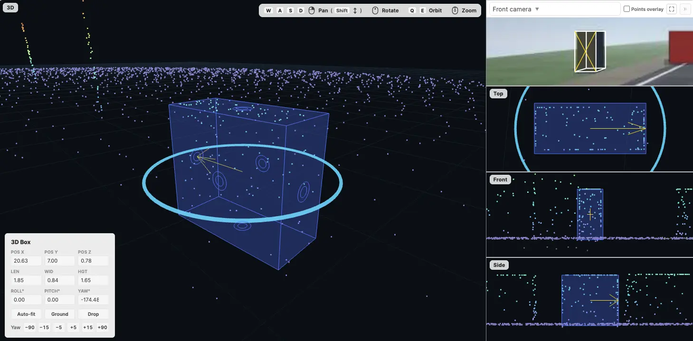
Creating and Editing a Point Mask
A Point Mask is an instance defined by the original point-cloud points assigned to it on each frame. It has a class, visible range, properties, comments, and relationships like a 3D Box, but no movable outline or transform: there is nothing to move, resize, or rotate. Editing means painting more points or erasing existing membership.
Creating a new mask
- Pick a Point Mask class or press M. Selecting the tool clears the previous object selection so an accidental stroke cannot silently modify another instance.
- Choose Paint / Erase, Brush / Lasso / Rectangle, and brush size from the gear settings. New masks must begin in Paint mode.
- Draw in the 3D, Top, Front, or Side pane. Eligible displayed points preview in the class colour before release; releasing commits one atomic selection against the full parsed source cloud, including points omitted from the decimated render buffer.
- The first stroke creates a mask whose visible range contains only the current frame. The new instance is selected, focused, and placed directly into editing mode so additional strokes continue modifying it rather than creating duplicates.
Painting is exclusive: a point may belong to only one Point Mask on a frame. Points owned by another mask are skipped instead of reassigned. Viewer decimation does not change saved membership—the editor maps displayed points back to their original parsed source indices.
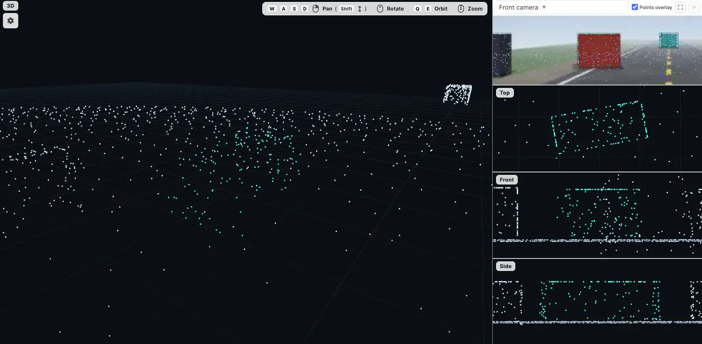
Editing an existing mask
Use the brush icon beside a Point Mask in either annotation-panel view or on its timeline row. The active button turns blue and an Editing: #N Class chip appears in the viewer. While editing:
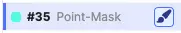
- Paint adds points to that instance; Erase removes only that instance's points. Brush, Lasso, and Rectangle all support both modes and live preview.
- If the playhead is already inside the visible range, its current frame is preserved—even when empty. If it is outside, the editor seeks to the first frame of the range.
- Seeking or adjusting the same row's start / end handles keeps editing active. Painting outside the range is blocked with a warning; extend the range first.
- Click the active blue brush again to stop. Switching tool or class, or selecting a different annotation, also ends editing and shows an informational toast. Strokes already committed on pointer release are saved automatically; there is no separate Apply button.
- Erasing all points on one frame makes that frame empty. Erasing the final painted points across every frame deletes the Point Mask instance entirely.
Working across frames
Point Mask membership is explicit and frame-local—there is no shape interpolation. Extend the visible range with its timeline handles, seek to each frame that needs membership, and paint it while the instance is in edit mode. New frames inside an expanded range begin empty (hollow marker). The segment body cannot be dragged to another time because point index N on one source frame does not identify the same physical point on another frame.
Annotation Panel
The annotation panel is the command-centre for structured data. It lists every annotation in the item and offers two complementary views.
Instance View
The default layout: one row per annotation. Each row shows:
- An eye icon for per-annotation visibility, copy-id button, the class chip (click to change class), and the object's start / end frame (1-based). Editable Point Mask rows also show a brush button beside the instance number for entering / leaving mask editing.
- Quick-action icons — comments, relationships, property popover icon (opens property popover).
Click a row to select and focus that annotation. If the playhead is outside its range, the editor seeks to its start; otherwise it preserves the current frame. The panel supports:
- Group By — Point Cloud Name, Class Name, or Tool Type.
- Order By — JSON Export (default), Class Name, Tool Type, Start frame, Created By, Creator Role, Created At.
- Filter — by class, by property, by comments (when comments are enabled).
- Reordering — when using Group By Point Cloud Name and Order By JSON Export, drag handles appear on instance rows. Drag to reorder instances; reordering is reflected in the data and export.
Table View
Toggle to Table View for a spreadsheet-style grid: one row per annotation, one column per property. This is the fastest way to scan and edit properties across many Segments, Boxes, Point Masks, and Polylines at once.
- Fixed columns: Class, Tool Type, Start frame, End frame, optional Comments column when comments are enabled, one column per relationship type, plus the three Created-By / Role / At meta columns (hidden by default). Point Mask and Polyline rows expose the same brush / pencil edit button beside their instance number as Instance View.
- Property columns adapt to the class of each row — properties not defined on a class show as empty cells.
- Sort by any column; filter via column headers. Rating columns use the same numeric min/max filter as Numeric. Approval columns offer a fixed three-state picker — Approved, Disapproved, (Blank) — regardless of which states currently appear in the data, so you can always pre-filter for "no verdict yet" before any rows have been approved.
- Inline edit each cell; changes auto-save immediately.
- When a class has AI Text / AI Select properties, the table shows a leading AI column and per-cell extract icons. These are carried over from the video / image tools and are inert until 3D AI extraction is implemented.
- Use the Columns dropdown to reorder, hide, or pin columns for the current session. Your starting order and pin defaults come from the project-wide Table Column Settings.
- Pin columns — clicking the pin icon next to a column glues it to the leading edge of the table. Pinned columns always render before unpinned ones (preserving relative order within each cluster); the leading utility cells (eye icons, drag handle, copy-id) and group subheaders also stick to the leading edge once any column is pinned, so per-row controls and group labels stay visible during horizontal scroll. Drag-reordering inside the dropdown is restricted to within a cluster (pinned↔pinned or unpinned↔unpinned). Pin state is per-session.
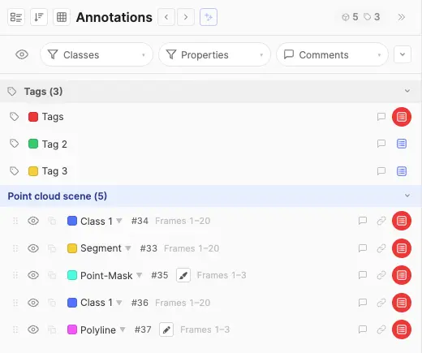
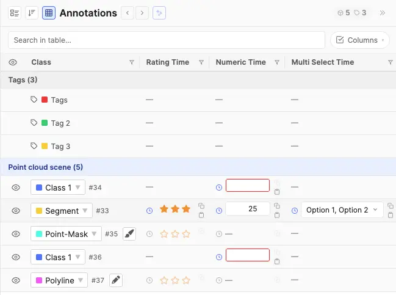
Column Group Chips
When an admin has configured column groups, a row of toggle chips appears above the table. Each chip represents one group and shows its label. Click a chip to show or hide all columns in that group at once. Chips display three visual states: active (all group columns visible), partial (some columns individually hidden), and inactive (all group columns hidden). Hovering a chip shows a tooltip listing the columns it contains. Editors can still show or hide individual columns from the Columns dropdown regardless of group state.
Grouping & Bulk Edit
Both Instance View and Table View can group annotations by Point Cloud Name, Class Name, Tool Type, or any individual Property. In Table View, groups display visual subheader rows that break the grid into collapsible sections — one per group value. Group headers include collapse / expand controls.
Editable groups expose an Edit action next to the group label. Clicking it opens a bulk-edit popover where you can apply changes to every annotation in the group at once:
- Change the class of all grouped annotations. See Class Changes for class eligibility, property retention, and confirmation details.
- Edit shared property values across the group.
Changes from the bulk-edit popover are applied immediately and feed the standard undo stack.
Property Editing
Click the property popover icon on a row in the Instance View to open the property popover. The popover anchors next to the row so the source annotation and the structured fields stay visible together. In Table View, fields are inline-editable in their cells. (AI Text / AI Select fields also show extract icons carried over from the video / image tools; those are currently inert.)
- Free Text — inline editable; its Text Display mode controls presentation: Inline (default), Modal (a roomy verbatim plain-text modal), or Rich Text (a formatted rich-text modal).
- AI Text — edits inline like Free Text and supports the same Text Display modes (Inline / Modal / Rich Text). The automatic extraction controls are currently inert in the point cloud tool.
- Select — always a dropdown; the Allow multi-select property option controls whether one or multiple options can be picked at the same time.
- AI Select — a dropdown of predefined options picked manually. The AI pre-selection is currently inert in the point cloud tool.
- Numeric — number input with optional bounds and unit.
- Rating — orange/gold star picker rendered in the popover, Table View cell, bulk edit dialog, and Frame Panel instance view. Click a star to store that number; click the currently selected star again to clear the value. Hover previews fill from the first star through the hovered star. Required-and-empty editable ratings get the same thin red wrapper outline as Approval. View-only access keeps the palette but dims the stars and disables clicks. Table search matches the displayed number. Time-based Rating writes a rating keyframe at the current playhead and clears by writing an empty keyframe value.
- Approval — a compact two-button picker (thumbs-up / thumbs-down) for capturing a three-state verdict. Click the up icon to mark the row approved (stores
"true"), the down icon to mark it disapproved ("false"); clicking the active icon again clears the verdict, and clicking the opposite icon swaps it in place. The property popover and Table View cell render the same picker, and changes flip on click without needing to dismiss the popover or refresh the panel. In view-only contexts (role lacks edit access, class is view-only) the icons keep their green / red palette but read as dimmed so the verdict stays legible at a glance; the buttons are not interactive. Approval columns are excluded from the table's free-text search — filter by verdict via the column dropdown's three-state picker. Time-based approval works exactly like any other time-based property: each click writes a keyframe at the current playhead carrying"true"/"false"/"", the frame panel's keyframe popover lists the verdict as plain text (true, false, or (cleared)), and the table / popover picker reflects the value resolved at the current frame. - Required indicator — required properties are visually flagged when empty so incomplete annotations are easy to spot.
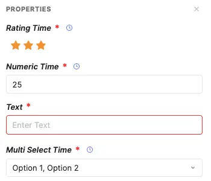
AI Property Autofill
The AI Text and AI Select property types send annotation context and each property's configured prompt to your AI proxy. By default the model and proxy come from project configuration; individual properties can override that routing.
Where to trigger extraction
AI extraction is available at three scopes. Single-property and row-level controls exist in both the property popover and Table View; bulk extraction runs from the annotation panel header regardless of which panel mode you are in.
- Single property — run one AI Text or AI Select field at a time.
- Property popover — each AI property shows compact Extract (and, when Enable Editing is on, Edit prompt) icons beside its label.
- Table view — the same per-property icons appear inside that property's table cell. See Table View.
- Whole row — run every empty, runnable AI property on one annotation row at once.
- Property popover — the AI action bar at the top of the popover offers Extract and Edit prompt (when editing is enabled for any AI property on the row).
- Table view — the leading AI column mirrors those same row-level actions.
- Full annotation panel — when bulk extraction is enabled, the panel-header extract button runs AI extraction across every visible instance row in the panel, in Instance View or Table View. See Bulk annotation panel extraction.
- Edit prompt modal — opened from any Edit prompt entry point above; shows editable per-property prompts before running.
Prompts and routing
- System prompts are configured per property as the Default Prompt and can be overridden per-run when editing is enabled.
- Per-property proxy / model — properties with a configuration override route independently. A single row or popover extract may issue multiple API batches when its empty AI properties resolve to different proxy/model pairs.
- For each request the tool sends a built-in system message and a user payload describing the annotation in context.
- For AI Select, the model returns one (or more, if multi-select is enabled) option labels from the property's predefined list; unrecognised values are silently dropped.
- Requires a configured route for each property being extracted — either the project AI Property Proxy or a per-property override.
- When Enable Editing is on, annotators can tweak a property's prompt before pressing Extract; when off, the configured prompt is used as-is. Errors (rate limits, provider failures, missing proxy) surface as toasts.
Bulk annotation panel extraction
When an admin enables Allow Bulk Extraction of all AI Properties, a compact extract button appears in the annotation panel header (alongside the view / group-by controls). Click it to run AI extraction across every visible instance row in the panel — whether you are in Instance View or Table View.
- Scope — respects the current panel filters, table search (when in Table View), column filters, video/class filters, and collapsed group sections. Collapsed sections are skipped; only expanded groups contribute rows.
- What runs — for each qualifying row, the bulk job extracts the same set of properties the row-level Extract button would — empty AI Text / AI Select fields that pass visibility and accessibility checks. Already-filled values and view-only AI properties are skipped.
- Confirmation & progress — a confirm dialog shows the row count. During the run a non-dismissible progress banner counts completed rows; row-level and per-property extract icons show a spinner while that row is queued. Outcome toasts stack beneath the banner.
- Summary — when finished, a dismissible banner reports how many rows were fully filled, partially filled, failed, or skipped.
- Concurrency — rows are processed in parallel (up to 15 at a time); each row still batches its own properties by proxy/model route.
- The button is hidden entirely when the configuration toggle is off, and disabled when no visible rows have anything left to extract.
Text Display Modals (Modal & Rich Text)
Free Text and AI Text properties whose Text Display mode is set to Modal or Rich Text render as a compact pill in the popover / table cell; clicking it opens a full-page editor instead of editing inline. The same modals are reused for tag-level properties.
- Modal (plain text) — opens the same kind of full-page popup as the Rich Text modal, but with a plain editing area and no formatting toolbar. What you type is stored exactly as-is — whitespace, line breaks, and literal markup (raw HTML, JSON, code) are preserved verbatim, with no formatting or conversion applied. Use it for comfortable reading and editing of long or structured plain text.
- Rich Text — a formatting editor supporting bold, italics, headings, bulleted and numbered lists, blockquotes, inline code, code blocks, links, and tables. Sized for multi-paragraph content like detailed image captions, OCR transcriptions of long passages, or scene descriptions. Content round-trips through a formatted representation, so it is not intended for preserving arbitrary literal markup — use Modal for that.
Both modals offer a View only state for read-only roles and close on Save & Close, Cancel, or Esc.
Property & Option Visibility Rules
Configurations defined as property visibility rules and option visibility rules are evaluated and enforced live as the annotator works — there's no separate "validate" step, and the same logic applies in both the floating property popover and the table view.
Property Visibility Rules — apply to any property type
A property visibility rule can be set on any property type (Free Text, AI Text, Select, AI Select, Numeric, Rating, Approval — all of them, except time-based properties which are mutually exclusive with rules). When the rule is unsatisfied for the current row, the whole field is treated as inaccessible:
- The field still renders in the popover and as a table column so annotators can see the field exists, but it's dimmed and read-only, with a not-allowed cursor and a hover tooltip explaining what controls it (e.g. "Controlled by: Object Category = Vehicle").
- Any stored value on that property is automatically cleared the moment the rule flips to unsatisfied — and the clear cascades, so if A controls B and B controls C, changing A can clear both B and C in a single step.
- Required validation is suppressed while the property is inaccessible — the red required indicator on the annotation / tag row only reactivates when the rule becomes satisfied again.
- AI extraction is skipped on AI Text / AI Select properties whose rule is unsatisfied. The row-level Extract / Edit prompt controls, the per-property icons in the property popover, and the per-cell extract icons in the table all hide or grey out for these fields, and re-appear the instant the controller flips back — no popover reopen needed.
- Modal / Rich Text properties gated by an unsatisfied rule render as a plain "—" placeholder; their modal (plain-text or rich-text) cannot be opened. Approval columns behave the same way in the table — the cell collapses to "—" rather than rendering a dimmed picker, matching the convention used by every other column type. The property popover keeps the dimmed-disabled picker so users still see what the field would look like.
Option Visibility Rules — apply only to Select / AI Select
Select and AI Select properties additionally support per-option visibility rules. These don't hide the whole field — they filter the contents of the dropdown:
- Each option appears in the dropdown only when its own rule is satisfied by the current controller values on that same annotation / tag row. Options with no rule are always shown.
- If the annotator changes a controller value and a previously-selected option is no longer valid, the dropdown's stored value is cascade-cleared the same way property-level rules cascade — so the row never holds an option that can't be re-picked from the visible list.
- For AI Select, the model's pre-selection respects the same filtering — values the model returns that fail the active rules are silently dropped before being written to the row.
How the two layers combine on a Select / AI Select property
A Select / AI Select property can carry both kinds of rules at once: a property visibility rule on the field itself, and option visibility rules on one or more of its individual options. The editor evaluates them in a fixed order — property first, then options — so they can't contradict each other:
- The property rule runs first. If it is unsatisfied, the whole field is dimmed and read-only as described above; option rules on that field are never evaluated, because there is nothing to pick from while the field is inaccessible.
- If the property rule passes (or no property rule exists), the option rules filter what appears in the dropdown.
In short: the property rule decides whether the field is in play; the option rules then decide which choices are valid inside it. Cascade clearing covers both layers in one pass — a stored value can be cleared because the option it points to is no longer valid (option-rule failure) or because the whole property hosting it is no longer visible (property-rule failure). The chain icon on a property's editor label, and the small chain badge in the table column header, both surface the active rule's controller(s) on hover so annotators can quickly see why a field is dimmed or why their list of options is narrower than expected.
Time-Based Property Editing
A property marked time-based in configuration holds a per-frame timeline of values rather than one constant. Annotators edit it exactly like a normal field (popover or table cell) — the difference is which frame the value applies to. A small clock icon next to the field label (and inside the table cell) marks these properties so they're easy to tell apart from constant ones.
Reading the value
Every time-based field shows the value that applies at the current playhead — specifically the value of the most recent property keyframe at or before the current frame (a step function, no interpolation). As you scrub or play, the displayed value updates to match the timeline. The panel refreshes these fields on seek so the popover, table, and instance view always reflect "now".
Setting values
- The first committed value becomes the unmarked start anchor. This is true wherever the playhead is inside the range: the first value applies from the instance start and shows no timeline circle. It is also mirrored into the normal
propertyValuesfield for export and time-agnostic consumers. - Later edits create a keyframe at the current frame. The new value applies from that frame forward until the next keyframe (or the end). Numeric and inline text fields commit once when focus leaves the field, so partially typed digits or text never become intermediate keyframes; pickers commit their completed selection.
- Redundant changes collapse automatically. Setting a value to what it already shows is a no-op (no keyframe). Setting A→B→A at the same frame removes the keyframe again. Setting a value equal to the next keyframe's value moves that change earlier (the later keyframe collapses away).
- Out-of-range is disabled. When the playhead sits outside the object's visible range, the field is shown blank and read-only — there's no valid frame to attach a value to. Opening the property popover from the panel automatically seeks into range so the fields are editable.
- Bulk edits from grouped table editing write a keyframe at the current frame for each in-range instance and skip instances whose range doesn't cover the playhead (the toast reports how many were updated vs. skipped).
Markers & deletion
On the frame timeline, property keyframes appear as a circle in a thin lane just above the object's segment bar — distinct from the geometry diamond, so a frame where both change reads as a diamond + circle stacked. The circle is an aggregate: one marker per frame where any time-based property changes, regardless of how many do.
Hovering the keyframe's frame bin anchors the interactive keyframe popover, which lists every change recorded at that frame — the geometry change and/or each property change — each with its own trash icon. This is the single place to delete an individual change at a frame; deleting a property keyframe re-resolves the value from the previous surviving keyframe.
Range edits & type changes
- Dragging a range boundary prunes property keyframes the same way it prunes geometry. Moving the start past a keyframe drops earlier keyframes and re-anchors the start value; keyframes that fall into an interior gap are pruned outright (the following region forward-fills from the nearest surviving earlier keyframe).
- Toggling a property's time-based flag (in configuration) applies a clean overwrite on the next editor load: constant → time-based seeds a single start keyframe from the current constant value; time-based → constant keeps the start value as the new constant and drops the keyframes.
Comments
Comments let reviewers and annotators leave scoped notes on a specific annotation without cluttering the scene. Typical uses:
- Flagging ambiguous boxes or Point Masks for a second opinion.
- Recording rationale for borderline class decisions.
- QA feedback that doesn't belong in property values.
Each comment has an author, a timestamp, the message text, and a resolved flag. Comments are a flat list per annotation — there is no nested reply threading. Resolving a comment is gated by the Resolve Comments (Roles) allow-list, and deleting by Delete Comments (Roles). Comments are exported alongside the rest of the structure.
Relationships
Relationships capture the links between annotations — which object refers to which, how two things are related. They turn a flat list of annotations into a graph suitable for relation extraction, event modelling, or tracking the same object across instances.
- Enabled when Instance Relationships is on in configuration.
- The relationship-type taxonomy is admin-curated under Feature Control → Relationship Types; annotators pick from that list (no freeform types).
- From an annotation row, click the relationship icon, pick a relationship type, then pick the target annotation.
- Each annotation can hold one target per relationship type (a same-type, same-source link replaces the previous target).
- Relationships are directional (source → target). Symmetry isn't a per-edge flag — model it by adding a second relationship type, or by adding the inverse link manually.
Class Changes
To reclassify one annotation, click its class chip in the annotation panel and choose a class from the menu. The annotation's frame data or geometry stays unchanged; only its class and property values are updated. To reclassify a group, use the Edit action described in Grouping & Bulk Edit.
- Eligible classes. The menu lists only visible, editable classes with the same tool type as the annotation. A Segment, 3D Box, Point Mask, or Polyline can become only another class of that type. To convert across tool types, delete the original and redraw it under the new class.
- Strict property matching. A populated value is retained only when the destination class has one property with the exact same name and type and an identical value-shape configuration. This includes Select options and order, single/multi-select mode, defaults, visibility rules and their controllers, text display mode, numeric bounds/step/unit, rating maximum, role-visibility settings, and whether each of those fields is absent or explicitly set. Property IDs are remapped as they are unique and can't match.
- What does not block retention. Required status, helper text, and AI extraction settings such as prompts, model routing, and prompt-edit permission can differ. They affect future validation, help, or extraction rather than the stored value itself.
- Rules and access are enforced. The destination property must be editable for the current user. After all compatible values are mapped, the destination's property and option visibility rules are evaluated together; a value whose controller does not allow it is removed. Invalid or stale values are not retained. Destination defaults fill properties that have no retained value.
- Time-based properties. A time-based property is retained only when its time-based setting also matches. Its complete frame-keyframe timeline is moved under the destination property ID; a timeline with no matching destination property is removed.
- Confirmation and Undo. If any populated value or time-based timeline cannot be retained, the confirmation dialog reports retained and removed counts before applying the change. The same summary is used for a grouped class change. One Undo restores the original class, property values, and keyframes.
Unknown class
When a class is deleted in configuration (or its tool type no longer matches stored data), existing annotations that referenced it are shown as Unknown rather than being converted or deleted. They render in a neutral grey across the viewer, annotation panel, and frame timeline.
- An Unknown instance keeps its compatible Segment range, Box geometry, Point Mask membership, or Polyline frame geometry and its place on the timeline; only its class identity is unresolved.
- It can be reclassified — the class menu offers classes whose tool type is compatible with the stored annotation type.
- Stored properties remain unchanged but are unavailable while the instance is Unknown. AI extraction does not run on Unknown instances.
Annotation Isolation
Annotation Isolation is a configuration-level privacy mechanism, not a per-annotation dim toggle. When isolation is set to By User, by default each user only sees the annotations they themselves created. A role on Bypass Isolation (Roles), or the item's current status in Bypass Isolation (Statuses), lets that viewer see everyone's annotations. Matching either bypass is enough.
- Use isolation to prevent annotator bias by hiding peer annotations during the labelling pass.
- Reviewers in the bypass list can see all annotators' work side by side for QA.
- Creator filter chips — when isolation is on and the user is a bypasser, a row of chips appears at the top of the annotation panel labelled by creator. Toggle a chip off to hide that creator's annotations in the viewer and panel; toggle back on to bring them back.
- The eye icons in the panel let users hide individual annotations from their own view independently of isolation.
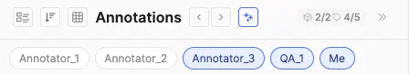
Tags under isolation
System-generated tags (item-scope and point-cloud-scope) participate in isolation alongside instances, but with a few rules of their own:
- Lazy creator stamping (ON and OFF) — tag rows are rendered in the panel as soon as an item is opened, but no
createdBy/createdAtis written to the JSON until the user makes their first JSON change anywhere in the item. That first change synchronously stamps every visible placeholder with the current viewer's email, role, and timestamp. An item that's only been viewed produces zero tag rows in the saved JSON and downloads. - Isolation ON — one row per user, per scope — the system auto-generates one tag row per user per visible tag class, on each scope (item-scope or point-cloud-scope), excluding admins (role id
3). Two annotators opening the same item end up with two independent rows for each tag class — each can edit their own row's properties and comments without seeing the other's, and a bypass reviewer sees all rows side by side. Re-opening an item where the user already has a row never creates a duplicate. - Mid-project rollback — if isolation is turned off after items have already accumulated multi-user copies, all existing copies stay intact. New users opening those items don't get a fresh copy; they edit whichever row already exists for the class. Brand-new items opened after the rollback follow the OFF rule (one row per class).
- Admins leave no footprint on passive view — admins never trigger tag materialization or stamping on open. An admin only becomes a tag's
createdByif they actively create a row that didn't exist yet (no row for their email under iso ON, or no row at all under iso OFF). Admin edits to a tag created by someone else preserve the original creator and only land the property / comment change. - Creator chips and table columns extend to tags — the bypass-mode creator-chip filter buckets tag rows by their stamped creator just like it buckets instances. The Created By, Creator Role, and Created At columns in the panel's table view populate for tag rows once stamped, and they're searchable / filterable.
- Deletion stays locked — tags are system artefacts and cannot be deleted by any role, including bypass viewers. Bypass viewers can read and edit other users' tag properties and comments; non-bypass viewers only ever see their own rows.
Undo / Redo
The tool maintains a single history stack of annotation actions — drawing, moving, keyframe edits, range edits, class changes, and property edits. Ctrl(⌘)+Z reverts to the previous snapshot; Ctrl(⌘)+Shift+Z (or Ctrl(⌘)+Y) re-applies it.
Import / Export
Items arrive into a project through JSONL bulk upload at the SuperAnnotate platform level. The editor reads each item's data.point_cloud_annotation_tool.value payload when it's opened. Items leave through the editor's Download button as a ZIP — round-trip-safe, so an exported annotations.jsonl can be re-imported into another project. Point-cloud bytes can either be uploaded to SuperAnnotate storage or URL-linked from elsewhere; the editor handles both via the same payload shape.
JSONL Import
JSONL (one JSON object per line) is the platform ingest format. Each line is one item. The editor doesn't have a direct JSONL upload button — items appear in the editor after the platform creates them from the JSONL.
Payload Shape
Each item must have:
metadata.name— display name (required).data.point_cloud_annotation_tool.value— the tool-specific payload. Insidevalue, items use apointCloudsarray. In practice this holds a single scene, as the editor does not support items with multiple scenes.
Each entry in pointClouds is a scene (StoredPointCloudFile) whose frames array holds the ordered point-cloud frame sequence. Each frame carries exactly one source:
uploadedFile—{ uniqueName, fileName, fileType }. Bytes live in SuperAnnotate storage; the platform resolves them viauniqueName. OptionalfileSizeis a sibling field on the frame.url— a string URL with a siblingurlKind(see URL-linked point clouds) and optionalfileType/fileSizehints.
The scene also carries scene-level instances (Segments, 3D Boxes, Point Masks, and Polylines), tags, and optional ground metadata. Boxes use pose keyframes; masks and polylines use explicit frame-local data; segments carry no geometry.
uploadedFile, url, urlKind, fileType, fileSize, or upload flag. Put all source and source-access fields on the corresponding entry in frames[]. The scene-level name is optional display metadata used for grouping in the annotation panel..pcd point clouds with x, y, and z fields. ASCII and uncompressed binary PCD are supported; binary-compressed PCD is not. If a frame cannot be fetched or parsed, the editor reports the load error and does not substitute synthetic data.Minimum required keys: metadata.name, data.point_cloud_annotation_tool.value.pointClouds, one scene in pointClouds, and that scene's non-empty frames array. Every frame needs one source — uploadedFile or url. Everything else — name, id, urlKind, fileType, fileSize, instances, tags, and itemTags — is optional and can be added incrementally.
Uploaded Point Cloud Scene
{
"metadata": { "name": "lidar-drive-001" },
"data": {
"point_cloud_annotation_tool": {
"value": {
"pointClouds": [
{
"name": "Ego LiDAR",
"groundZ": -1.80,
"frames": [
{
"id": "frame-0",
"name": "0000.pcd",
"uploadedFile": {
"uniqueName": "abc123.pcd",
"fileName": "0000.pcd",
"fileType": "application/octet-stream"
},
"fileSize": 4823104
},
{
"id": "frame-1",
"name": "0001.pcd",
"uploadedFile": {
"uniqueName": "def456.pcd",
"fileName": "0001.pcd",
"fileType": "application/octet-stream"
},
"fileSize": 4791220,
"groundZ": -1.82
}
],
"instances": [
{
"id": "ann-interval-1",
"instanceNumber": 1,
"classId": "class-driving-event",
"type": "segment",
"start": 0,
"end": 1,
"propertyValues": { "prop-action": "Driving" },
"propertyKeyframes": {
"prop-action": [
{ "frame": 0, "value": "Driving" },
{ "frame": 1, "value": "Stopped" }
]
}
},
{
"id": "ann-1",
"instanceNumber": 2,
"classId": "class-vehicle",
"type": "cuboid_3d",
"start": 0,
"end": 1,
"cuboid3d": {
"position": { "x": 12.4, "y": -3.1, "z": 0.85 },
"dimensions": { "x": 4.6, "y": 1.9, "z": 1.7 },
"rotation": { "x": 0, "y": 0, "z": 1.57 }
},
"cuboid3dKeyframes": [
{ "frame": 0, "position": { "x": 12.4, "y": -3.1, "z": 0.85 }, "dimensions": { "x": 4.6, "y": 1.9, "z": 1.7 }, "rotation": { "x": 0, "y": 0, "z": 1.57 } },
{ "frame": 1, "position": { "x": 13.9, "y": -3.0, "z": 0.85 }, "dimensions": { "x": 4.6, "y": 1.9, "z": 1.7 }, "rotation": { "x": 0, "y": 0, "z": 1.55 } }
],
"propertyValues": { "prop-label": "Sedan" }
},
{
"id": "ann-2",
"instanceNumber": 3,
"classId": "class-road-marking",
"type": "point_mask",
"start": 0,
"end": 1,
"pointMaskFrames": [
{
"frame": 0,
"points": {
"encoding": "delta-u32-base64",
"data": "BAAAAAMAAAADAAAAAQAAAAEAAABYAAAA",
"count": 6
}
}
],
"propertyValues": { "prop-surface": "Painted line" }
}
],
"tags": [
{ "tagClassId": "tc-quality", "propertyValues": { "prop-score": "0.95" } }
]
}
],
"itemTags": [
{ "tagClassId": "tag-highway", "propertyValues": {} }
]
}
}
}
}
start / end / visibleRanges and keyframe frame value. Each frame's name is optional (falls back to the file name or URL tail).groundZ when that known horizontal elevation should be the default drawing ground; otherwise the editor starts with Auto Ground.Ground Metadata
Use pointClouds[].groundZ to supply a known horizontal ground elevation in metres for the whole scene. It enables Dataset Ground and makes it the default drawing reference. A frame may use frames[].groundZ to override the scene value for that frame, for example when a sequence has a known calibration adjustment.
{
"pointClouds": [{
"groundZ": -1.80,
"frames": [
{ "url": "https://storage.example.com/pcd/0000.pcd", "urlKind": "presigned" },
{ "url": "https://storage.example.com/pcd/0001.pcd", "urlKind": "presigned", "groundZ": -1.82 }
]
}]
}
- Use finite numbers in point-cloud metres. The value is not a distance from the lowest visible return; it is the world Z elevation of the intended horizontal drawing surface.
- Scene value first. A frame override is valid only when its containing scene also has
groundZ. This guarantees Dataset Ground remains available throughout the sequence. - Horizontal only. Metadata currently represents a scalar elevation. Use Auto Ground for a detected sloped surface, or Custom Z for a temporary session-only horizontal reference.
URL-Linked Point Clouds
To point at point clouds that live outside SuperAnnotate, replace each frame's uploadedFile with a url + urlKind pair:
{
"metadata": { "name": "lidar-drive-002" },
"data": {
"point_cloud_annotation_tool": {
"value": {
"pointClouds": [
{
"name": "Ego LiDAR",
"frames": [
{ "url": "https://storage.example.com/pcd/0000.pcd", "urlKind": "presigned" },
{ "url": "https://storage.example.com/pcd/0001.pcd", "urlKind": "presigned" }
]
}
]
}
}
}
}
urlKind tells the editor how to access the URL:
| Value | Meaning |
|---|---|
"uploaded" | Bytes live in SuperAnnotate (rare in JSONL — usually carried by uploadedFile instead). |
"public" | Publicly accessible URL — fetched directly. |
"presigned" | Pre-signed URL (e.g. AWS S3) — fetched directly but may expire. |
"integration" | Requires platform integration credentials — the platform signs the URL before fetching. |
"asset" | Reserved for SA-internal asset URLs that need re-signing on each load. |
urlKind is omitted, the URL is treated as an integration / asset URL and routed through the platform's signing path. If you are providing public or pre-signed URLs, you must set urlKind to "public" or "presigned" explicitly, otherwise the signing step will fail and the point cloud will not load.Structure Keys
| Key | Where | Description |
|---|---|---|
metadata.name | top level | Item display name (required). |
data.point_cloud_annotation_tool.value | top level | The tool-specific payload. Other tools may add their own keys under data. |
pointClouds | value | Array of StoredPointCloudFile scenes. Normally a single scene. |
pointClouds[].name | scene | Optional display name for the scene. |
pointClouds[].groundZ | scene | Optional finite horizontal ground elevation in metres. Enables and defaults to Dataset Ground for every frame unless that frame supplies an override. |
pointClouds[].frames | scene | Required non-empty ordered array of PointCloudFrame — the frame sequence. Array order defines the 0-based frame index. It is the only location for point-cloud source fields. |
frames[].uploadedFile | frame | { uniqueName, fileName, fileType } for SA-stored bytes. Mutually exclusive with url; optional fileSize belongs directly on the frame. |
frames[].url + urlKind | frame | External URL with access kind. See URL-Linked Point Clouds. |
frames[].id / name | frame | Optional stable id and display name for the frame. name falls back to the file name or URL tail. |
frames[].timestamp | frame | Optional capture time in seconds (display-only; the timeline indexes by frame, not time). |
frames[].groundZ | frame | Optional finite horizontal Dataset Ground override in metres. Accepted only when pointClouds[].groundZ is present. |
pointClouds[].cameras | scene | Optional array of CameraSensor calibrations. Present enables the camera reference panel. See Camera Calibration & Images. |
frames[].images | frame | Optional array of FrameImage for this frame — one per camera, keyed to cameras[] by cameraId. See Camera Calibration & Images. |
pointClouds[].instances | scene | Array of StoredAnnotation (Segments, 3D Boxes, Point Masks, and Polylines). |
pointClouds[].tags | scene | Array of point-cloud-scoped tags: { tagClassId, propertyValues }. |
itemTags | value | Array of item-scoped tags: { tagClassId, propertyValues }. |
itemContext | value | Optional plain-text values for the Item Context slots — see Item Context for the shape and the orphan-key rules. |
instances[].type | annotation | Exactly one of "segment", "cuboid_3d", "point_mask", or "polyline". |
instances[].classId | annotation | References a class ID from the project's class list. |
instances[].instanceNumber | annotation | Optional user-facing sequential number (#1, #2, …) shown next to the class name in the panel, table, viewer labels and timeline. Unique across the item. Auto-assigned on load when absent and persisted on the next save, so it can be omitted from preannotations. |
instances[].start / end | annotation | Frame indices (0-based) marking the object's visible span within the scene's frame sequence. |
instances[].cuboid3d | cuboid_3d | Required geometry: { position, dimensions, rotation } — each a { x, y, z } vector in metres in the sensor/ego frame (+Z up). dimensions = length (x) / width (y) / height (z); rotation = intrinsic Euler angles in radians (roll x / pitch y / yaw z). This is the base pose, mirroring the object's first keyframe. |
instances[].cuboid3dKeyframes | cuboid_3d | Optional array of { frame, position, dimensions, rotation } pose keyframes. Between keyframes the pose is interpolated (position / dimensions lerp, rotation along the shortest angle). Absent means the box is static at cuboid3d. |
instances[].pointMaskFrames | point_mask | Required non-empty, frame-sorted array of explicit { frame, points } memberships for filled frames. An in-range frame with no entry is empty; membership never interpolates. See Point Mask Membership Encoding for the nested payload. |
instances[].polylineFrames | polyline | Required non-empty, frame-sorted array of { frame, points }. Each points array has at least two raw world-space { x, y, z } vertices in metres. Missing in-range frames are empty; no interpolation is applied. |
instances[].visibleRanges | annotation | Optional array of { start, end } frame spans. Omit it for the normal contiguous start…end range; box imports may use it for discontinuous visibility. |
instances[].propertyValues | annotation | Object keyed by property ID. Values are strings; multi-select values are option labels joined with ", ". For a time-based property, this duplicates the value of that property's first start-anchor entry in propertyKeyframes. |
instances[].propertyKeyframes | annotation | Optional object keyed by time-based property ID. Each value is a frame-sorted array of { frame, value } entries. Its first entry is the start anchor at the annotation's start frame; later entries are changes. Values apply forward until the next entry (step function, no interpolation). See Time-Based Property Editing. |
instances[].comments | annotation | Optional flat array — see Comments. |
instances[].relationships | annotation | Optional Record<relationshipTypeId, targetInstanceId>. |
instances[].createdAt / createdBy | annotation | Audit metadata. createdBy is { email, role }. |
Point Mask Data Format
Point Mask membership is stored as a sparse set of indices into the corresponding frame's original parsed point order. If a frame's parsed points are P0, P1, P2, …, decoding a membership set to [4, 7, 10] means that P4, P7, and P10 belong to that annotation on that frame.
EncodedPointSet fields
| Field | Meaning |
|---|---|
encoding | Always "delta-u32-base64". This is a format identifier, not a package name. |
data | Base64 text containing count unsigned 32-bit integer deltas in little-endian byte order. |
count | Number of selected points (and therefore number of encoded deltas). The decoded Base64 payload must contain exactly count × 4 bytes. |
Encoding and decoding
The encoder removes duplicates, drops invalid / negative indices, sorts the remainder, and stores the distance from each selected index to the previous one. The first delta is measured from zero:
selected indices: [4, 7, 10, 11, 12, 100] stored deltas: [4, 3, 3, 1, 1, 88] Base64 data: "BAAAAAMAAAADAAAAAQAAAAEAAABYAAAA"
To decode, Base64-decode data, read the resulting bytes as little-endian unsigned 32-bit integers, then cumulatively add the deltas. No third-party package is required. For example, Python's standard library is sufficient:
import base64
import struct
from itertools import accumulate
def decode_point_set(points):
count = points["count"]
raw = base64.b64decode(points["data"])
if len(raw) != count * 4:
raise ValueError("Invalid Point Mask payload")
deltas = struct.unpack(f"<{count}I", raw)
return list(accumulate(deltas))
To produce a dense per-point label array for model training, initialise one background label per source point and assign the annotation's class / instance label at every decoded index. Repeat for each Point Mask on that frame. The editor enforces exclusive ownership during painting, so a point is not intentionally assigned to two masks.
Frame semantics and size characteristics
- Frame-local — index 100 on frame 0 and index 100 on frame 1 are unrelated unless the source dataset separately guarantees correspondence. Never shift a mask's encoded membership to another frame.
- Sparse — only selected indices are stored; frames with no selected points omit their
pointMaskFramesentry. This is usually smaller than storing a label for every point when only a small portion of the cloud is painted. - No interpolation — the visible range says where the instance may exist; it does not synthesize membership. Each filled frame has its own encoded set.
- Fixed-width deltas — every delta occupies four bytes before Base64, including a delta of
1. Delta encoding therefore does not by itself make clustered selections smaller than storing the same number of absolute 32-bit indices; its main benefits are a simple deterministic representation and good compressibility when the surrounding export is ZIP / gzip compressed. Base64 makes binary JSON-safe and adds roughly 33% overhead.
Camera Calibration & Images
A scene can carry calibrated cameras plus per-frame images so the editor can project 3D Boxes and current-frame Polylines onto reference imagery (see Camera Reference Images). Two pieces work together:
pointClouds[].cameras— scene-levelCameraSensorcalibrations (static across frames, since rigidly-mounted sensors keep a constant relative pose).frames[].images— the actual image for each camera on that frame, linked back to a camera bycameraId. Images use the sameuploadedFileorurl+urlKindconventions as frames.
{
"pointClouds": [
{
"name": "Ego LiDAR",
"cameras": [
{
"id": "cam_front",
"name": "Front camera",
"intrinsic": [960, 0, 640, 0, 960, 360, 0, 0, 1],
"extrinsic": [0,-1,0,0, 0,0,-1,1.6, 1,0,0,0, 0,0,0,1],
"imageWidth": 1280,
"imageHeight": 720,
"model": "pinhole",
"distortion": { "k1": -0.28, "k2": 0.09, "p1": 0.0, "p2": 0.0, "k3": 0.0 }
}
],
"frames": [
{
"url": "https://storage.example.com/pcd/0000.pcd", "urlKind": "presigned",
"images": [
{ "cameraId": "cam_front", "url": "https://storage.example.com/img/front/0000.jpg", "urlKind": "presigned" }
]
}
]
}
]
}
| Key | Scope | Meaning |
|---|---|---|
cameras[].id | camera | Stable id referenced by each frame image's cameraId. |
cameras[].name | camera | Optional label shown in the panel's camera dropdown. |
cameras[].intrinsic | camera | 3×3 row-major flat array of 9: [fx, 0, cx, 0, fy, cy, 0, 0, 1]. |
cameras[].extrinsic | camera | 4×4 row-major flat array of 16 mapping the point-cloud frame → camera frame (OpenCV: +Z forward, +X right, +Y down). |
cameras[].imageWidth / imageHeight | camera | Pixel dimensions the intrinsics were calibrated for. |
cameras[].model | camera | "pinhole" (default) or "fisheye". |
cameras[].distortion | camera | Brown–Conrady coefficients for pinhole: { k1, k2, k3, p1, p2 } (all optional; omit for pre-rectified images). |
cameras[].fisheye | camera | Kannala–Brandt coefficients when model is "fisheye": { k1, k2, k3, k4 }. |
frames[].images[].cameraId | image | Links the image to a cameras[] entry. |
frames[].images[].uploadedFile / url + urlKind | image | The image bytes / link — same conventions as a frame's cloud source. |
frames[].images[].extrinsic | image | Optional per-frame 4×4 extrinsic override (row-major 16) for moving-camera / world-frame datasets. Falls back to the sensor's static extrinsic when absent. |
cuboid_3d and Polyline geometry through calibration at render time, so imagery remains a read-only reference.Download / Export
The Download button (when allowed by Access Control → Download Annotations) produces annotations.zip containing the current item.
Export Structure
The ZIP always contains:
| File | Purpose |
|---|---|
| annotations.json | The full payload — the pointClouds array (with per-scene frame references, instances, tags) plus item-level tags. |
| name2id.json | Reference mapping: class names → IDs (with their tool type), property names → IDs, tag class names → IDs, relationship type names → IDs, and (when configured) Item Context slot names → IDs under the itemContext key. |
| annotations.jsonl | One-line JSONL in the same shape accepted by JSONL Import. |
The ZIP contains annotation data and source references; it does not bundle original point-cloud or camera-image bytes. Uploaded frames remain addressed by their uploadedFile.uniqueName, while URL-linked frames retain their URL metadata. Any supplied scene groundZ and per-frame groundZ overrides are preserved in the export; Auto Ground and Custom Z are session-only and are never added. The export strips video-only fields (isVideo, videoFrameMetadata) so the payload always matches the point-cloud schema.
Properties
Each annotation carries a propertyValues object keyed by property ID. Values are stored as strings:
- Free Text / AI Text — the raw string value.
- Numeric — the number serialised as a string.
- Rating — the selected star count serialised as a string (
"1"through the configured max); the key is omitted when unset. For time-based Rating the same strings appear inside each keyframe'svalue; a cleared keyframe carries an empty string (""). - Select / AI Select (single) — the option label.
- Select / AI Select (multi) — option labels joined with
", ". - Approval — the literal string
"true"when approved or"false"when disapproved. The key is omitted frompropertyValueswhen no verdict has been given, matching how other property types treat blank values. For time-based approval the same strings appear inside each keyframe'svalue; a "cleared" keyframe carries an empty string ("").
{
"propertyValues": {
"prop-label": "Sedan",
"prop-color": "Red",
"prop-tags": "Moving, Occluded",
"prop-confidence": "0.92",
"prop-verdict": "true"
}
}
Time-based properties additionally export a propertyKeyframes object next to propertyValues. It is keyed by property ID, and each value is a frame-sorted array of { frame, value } entries (frame is a 0-based frame index). The first entry is always the property's start anchor at the annotation's start; later entries are changes, and each value applies forward until the next entry. The matching propertyValues entry duplicates that first anchor value so time-agnostic readers (grouping, filtering, flat export) keep working. Constant properties never appear in propertyKeyframes. The example below has one constant property (prop-color) and one time-based property (prop-action):
{
"start": 0,
"end": 34,
"propertyValues": {
"prop-color": "Red",
"prop-action": "Idle"
},
"propertyKeyframes": {
"prop-action": [
{ "frame": 0, "value": "Idle" },
{ "frame": 12, "value": "Driving" },
{ "frame": 34, "value": "Parked" }
]
}
}
Annotation Type Payloads
All annotation types share id, classId, start, end, optional properties, comments, relationships, and audit metadata. Only their geometry payload differs. The full field reference is in Structure Keys; Point Mask's binary-safe membership codec is documented once in Point Mask Data Format.
Segments
A Segment exports as an ordinary range instance with type: "segment" and no geometry payload. Its time-based property array includes the start anchor and any later changes. Moving a Segment in the editor shifts both its range and those property keyframes, retaining interval-relative timing.
{
"id": "ann-interval-1",
"classId": "class-driving-event",
"type": "segment",
"start": 24,
"end": 89,
"propertyValues": { "prop-action": "Driving" },
"propertyKeyframes": {
"prop-action": [
{ "frame": 24, "value": "Driving" },
{ "frame": 52, "value": "Stopped" }
]
}
}
Spatial annotations
- 3D Box —
type: "cuboid_3d",cuboid3d, and optionalcuboid3dKeyframes. - Point Mask —
type: "point_mask"with apointMaskFramesentry for each filled frame. Hollow in-range frames have no entry. The temporary Constraint Box is editor-only and never exported. - Polyline —
type: "polyline"withpolylineFrames; each filled frame owns an independent world-space vertex array, while hollow frames have no entry.
Tags
Tags are split into two scopes in the export:
- Item-level tags — stored in the top-level
itemTagsarray. Apply to the whole item. - Point-cloud-level tags — stored per-scene in
pointClouds[i].tags. Apply to that scene.
Each tag entry references a tag class by ID and carries its own propertyValues object. The name2id.json file maps tag class IDs back to names.
{
"itemTags": [
{ "tagClassId": "tag-highway", "propertyValues": {} }
],
"pointClouds": [{
"tags": [
{ "tagClassId": "tc-quality", "propertyValues": { "prop-score": "0.95" } }
]
}]
}
Relationships
Relationships are stored on the source annotation as a single Record<relationshipTypeId, targetInstanceId> map. Each relationship type can hold one target per source annotation — adding a new target on the same type replaces the previous one. Relationships are directional; model bidirectional links by adding the inverse relationship from the target side.
{
"relationships": {
"rel-replies-to": "ann-2",
"rel-references": "ann-7"
}
}
Comments
Comments are exported as a flat array per annotation. Each comment captures author identity, message text, resolved state, and a creation timestamp. There is no nested replies structure.
{
"comments": [
{
"id": "cmt-1",
"authorEmail": "reviewer@example.com",
"authorName": "Pat Reviewer",
"text": "Confirmed — box aligned with the vehicle's front bumper.",
"resolved": false,
"createdAt": "2026-04-20T14:02:11Z"
}
]
}
Item Context
Item Context values are serialised as a top-level itemContext map of { slotId: string }. Keys are the stable slot ids from the project's Item Context configuration (the same ids surfaced under itemContext in name2id.json). Values use the same markdown-like plain-text format as rich-text properties — the editor renders them with full formatting but the on-disk representation stays plain text for backward compatibility.
{
"itemContext": {
"ctx-abc123": "You are reviewing a traffic-camera clip.\n\n**Key rules:**\n- Box every vehicle that fully enters the frame\n- Mark uncertain cases with `[REVIEW]`\n\n> Focus on the nearest lane first.",
"ctx-def456": "## Labelling guidelines\n\nTrack each subject across the scene with a stable instance.\n\n1. Vehicles — 3D Box\n2. Lane boundaries — Polyline"
}
}
- Role-hidden slots are still exported. Per-role visibility is a UI concern; downloads always carry the full set of stored values so QA / export pipelines see everything.
- Orphan keys are preserved. If a slot was deleted in config (or arrived via JSONL with an id no longer in config), its value is kept on disk and carried through every save and export. This mirrors the comments-style "non-destructive" precedent — admins can re-enable a feature later without rebuilding past data.
- Empty strings are valid values — they represent "user explicitly cleared the field". The
itemContextkey is omitted from the output entirely only when the merged map is empty. - JSONL upload — the same
itemContextshape is accepted on the inbound side. Use theitemContextmapping inname2id.jsonto translate human-readable slot names to ids when authoring upload payloads.
Explore Keys
The tool automatically publishes four top-level summary values on every item — instance_count, comment_state, class_list, and valid — surfaced to the SuperAnnotate Explore view so you can search, filter, and sort items by their annotation state. They are computed for you and written alongside the item's annotation data; there is nothing to configure.
| Key | Type | What it captures |
|---|---|---|
instance_count | Number | Total number of annotation instances in the item. Tags are not counted. It is 0 for an item with no annotations. |
comment_state | String | The combined comment status across every row (instances and tags): "Unresolved" if any comment thread is unresolved; otherwise "Resolved" if there is at least one comment and all are resolved; otherwise "None" when there are no comments at all. |
class_list | String array | The sorted, de-duplicated list of class names that have at least one instance in the item (based on instances, not tags). A class appears once no matter how many instances it has, and drops off when its last instance is removed. Deleted / unknown classes are omitted. |
valid | String | A completeness gate for the current user: "True" when every required property they can edit has been filled, or "" (empty) when at least one is still missing. Covers required properties on both instances and tags. |
A few details worth knowing:
validgates submission. It is registered as a required Explore key, so the platform blocks an item's status change by non-Admin users until the value is truthy ("True"). An empty value ("") prevents submission.validis per-user / per-role. It reflects what the current user can see and edit — properties on hidden or view-only classes, or rows hidden by isolation rules, never count against them. Because required fields can differ by role, the same item can read"True"for an annotator and""for a reviewer who has additional required fields to fill.- Opening an item is non-destructive. Simply viewing an item does not create an unsaved change. The one exception is a safety case: if an item was stored as
"True"but is no longer complete for the user who just opened it,validis corrected to""and saved immediately, so an incomplete item can't be submitted by mistake.
valid. A required time-based property counts as complete only when it has a starting value and is never cleared at any keyframe within the instance's visible range — a blank gap anywhere in that range leaves the item incomplete. Emptiness outside the visible range never counts against valid (the property isn't editable there). This whole-range check is what drives valid and the annotation panel's required indicator; the per-frame red outline in the property modal and table still reflects the value at the current frame only.Auto-Save
Users should never lose work. The auto-save system runs on two tiers:
- Debounced local save — annotation actions (draw, paint / erase, move, resize, rotate, range / keyframe edit, property change, comment, relationship, tag) coalesce and persist to the in-tool data layer ~1 s after the last change. Rapid edits collapse into a single save. Uploading point-cloud frames also marks the item dirty so they aren't lost on an early reload.
- Server auto-save (60 s interval) — while the item has unsaved changes, the editor pushes to the SuperAnnotate server every 60 seconds in the background.
There is no manual Save button on the main editor toolbar — auto-save handles persistence. (A "Save & Close" button exists inside the Rich Text Modal for property values.) See Auto-Save Timing for browser-close guidance.
Solutions
The tool's value isn't a feature list — it's how features combine to solve real 3D annotation challenges end-to-end. Each solution below walks through a common workflow: the goal, the configuration, and the step-by-step flow, with links to every relevant part of the tool. Adapt the class names and properties to your domain and you have a production-ready pipeline.
3D Object Tracking Workflow
Goal: Track objects across a LiDAR frame sequence with moving cuboid_3d boxes and class labels, suitable for 3D detection / tracking model training.
Configuration
- Access control: admins, annotators, reviewers; isolation set to By User with admins / reviewers in the bypass list.
- Classes: per-object 3D-Box classes — e.g. Car, Pedestrian, Cyclist, Truck.
- Properties: a Single Select Occlusion (None / Partial / Heavy) and a Numeric Confidence.
Workflow
- Admin uploads the frame sequence to the project as JSONL (per-frame
uploadedFileentries or URL-linked.pcdclouds). - Annotator opens the item; the first frame renders in the viewer and the rest preload in the background.
- They step to the first frame where the object appears, pick the class (the 3D Box tool auto-selects), and draw the box on the ground with the 3-click method — using Dynamic box height so tall objects (poles, trucks) get the right height automatically.
- They check the fit in the Top / Front / Side panes, nudging the pose with the on-box handles, numeric fields, T auto-fit, or R / G.
- They step forward to a frame where the object has moved, select the box, and re-pose it — a keyframe is created and the pose interpolates between keyframes.
- Repeat at each "kink" in the trajectory. Trim the object's visible range on the timeline to the frames where it's present.
- Switch to Table View to sort by start frame and verify each box has a complete track and its properties filled.
- Export — each box carries
cuboid3dplus acuboid3dKeyframesarray of(frame, pose)samples.
Attribute-Rich Frame Annotation
Goal: Capture 3D boxes whose state changes over the sequence (an object that parks, then drives, then is occluded), suitable for behaviour / state modelling.
Configuration
- Classes: 3D-Box classes per object type.
- Properties: mark an Action Single Select and an Occlusion Single Select as time-based so their values can change frame-to-frame; keep constant attributes (e.g. Colour) as plain properties.
Workflow
- Draw and track the box as in the workflow above.
- At the object's start frame, set the initial Action / Occlusion values — they anchor as the starting value with no marker.
- Scrub to the frame where the state changes and set the new value — a property keyframe (circle marker) is written; the value carries forward until the next change.
- Review changes by hovering the timeline segment (dynamic tooltip) and delete any mistaken keyframe from the anchored keyframe popover.
- Export — time-based values live in
propertyKeyframeskeyed by property ID as frame-sorted{ frame, value }lists, with the start value mirrored intopropertyValues.
Point Cloud Instance Segmentation
Goal: Assign source points to object or surface instances on each LiDAR frame for 3D semantic / instance segmentation training.
Configuration
- Classes: Point Mask classes such as Road, Lane Marking, Vehicle, Pedestrian, Vegetation, or Ground.
- Properties: optional confidence, occlusion, material, or review-state fields carried by the mask instance.
Workflow
- Select a Point Mask class, choose Brush / Lasso / Rectangle, and paint the first frame. The instance is created on that frame and enters edit mode automatically.
- Use multiple projected views to reach difficult geometry. When foreground and background overlap in projection, draw a temporary Constraint Box around the intended 3D region before painting.
- Extend the timeline range to the frames where the instance may appear. Paint each required frame explicitly; hollow markers are legitimate in-range frames with no assigned points yet.
- Use Erase for corrections. Points already owned by another Point Mask are protected from accidental overwrite.
- Review filled / empty markers and point counts on the timeline, then export. Each filled frame carries a sparse
delta-u32-base64point-index set that clients can decode without a third-party package.
Tips & Limitations
Small tricks that compound across thousands of annotations, plus the edges of the tool you should know before rolling out a large project.
Efficiency Tips
Class Shortcuts (1–9)
The first nine classes bind to 1–9, and picking one selects its matching Segment, 3D Box, Point Mask, or Polyline tool.
Tool & Editing Shortcuts
Switch tools with V, G, B, M, and L. Point Mask uses X, brackets, and C / Shift+C. For Polylines, Enter / double-click commits a draft, Esc cancels it, Backspace removes its last draft vertex, and double-clicking an existing vertex deletes it; while editing a filled frame, Z / Shift+Z ground the line. Box grounding uses the same Z shortcuts. Shift+F frames spatial geometry when available.
Fast Frame Navigation
Precise frame stepping matters for tight keyframes:
- Space — play / pause; Shift+Space plays even while typing.
- , / . — previous / next frame.
- < / > — jump to the first / last frame.
- The Frame X / N field on the timeline jumps directly to a typed frame.
- Tab / Shift+Tab — jump to the next / previous annotation.
Preloading & Playback
After the first frame renders, the editor prepares a byte-budgeted ready window around the playhead. Its exact frame count depends on the decoded cloud and camera-image sizes: it is not a fixed 150-frame cap and it is not necessarily the whole item. The initial timeline chip reports that nearby window, then hides after it is ready. Source frames outside the window are quietly resolved and parsed in the background, but their full render buffers are retained only while the memory budget allows.
- Seeking within the window swaps render-ready buffers immediately.
- Seeking outside it prioritizes the requested frame, then silently shifts the nearby window with hysteresis so ordinary scrubbing does not repeatedly reshuffle the cache. A central loading indicator appears only when that requested frame takes longer than its short grace period.
- Slow refills — if a shifted window still has missing frames after about 1.5 seconds, the compact timeline progress chip reappears until the nearby window is ready. Fast refills remain silent.
- Playback waits for each frame to fully load before displaying it, so cloud, camera imagery, and annotations remain synchronized and no frames are skipped. Lower the FPS for careful review; raise it to skim.
Recommended Frame Counts
There is no hard frame-count maximum: the editor can handle longer scenes, and the included 100-frame synthetic scene exercises a longer no-image sequence. For routine annotation, however, keep a single item to roughly 200–300 frames or fewer when practical. This keeps timeline bins and labels usable on smaller screens and limits how often a large real-data scene needs to refill its nearby ready window.
Frame size matters as much as count. Dense point clouds and high-resolution camera images consume a larger ready-window budget than the synthetic demos, so a 100-frame real scene can be more demanding than the included 100-frame synthetic scene. For longer captures, split work into logical scenes or sequences and preserve their frame ordering and meaningful range intervals.
Filtering & Grouping
Reviewing hundreds of boxes in an unsorted list is impractical. The annotation panel filtering, grouping, and ordering controls turn QA from random browsing into structured inspection.
- Group By — Point Cloud Name, Class Name, or Tool Type.
- Order By — JSON Export, Class Name, Tool Type, Start frame, Created By, Creator Role, or Created At.
- Class filter — narrow to one class at a time.
- Property filter — filter by configured property values.
- Table View + column sort / filters — fastest way to catch outliers.
Tags vs Properties
Both store structured metadata — the question is scope:
- Item-level tags describe the whole item. Use for dataset partition, source, capture session.
- Point-cloud-level tags describe the scene. Use for weather, sensor, environment.
- Properties describe a single annotation. Use for instance-level attributes (label, confidence, occlusion).
If you find yourself wanting a property on every annotation in the scene, it probably belongs as a point-cloud-level tag instead.
Auto-Save Timing
Auto-save debounces to the local data layer ~1 second after annotation actions; the server push runs on a 60-second interval whenever unsaved changes exist. There's no manual Save button on the main toolbar, so wait a couple of seconds after your last edit before closing the tab to ensure the local layer has captured your work — and ideally wait for the next 60-second server push cycle for full server-side persistence.
Limitations
Browser & WebGL
The viewer needs WebGL; it's best in Chrome and Edge (Chromium), where GPU rendering of large point clouds is most reliable. Safari and Firefox work with minor differences. Very large clouds are decimated to a point budget for smooth interaction, so extremely dense frames are down-sampled for display (the full bytes are preserved on disk).
PCD Format Support
The parser reads .pcd in ASCII and uncompressed binary layouts. binary_compressed (LZF) is not supported, and other point-cloud formats (LAS/LAZ, KITTI .bin, etc.) are out of scope for now — convert to PCD before upload. Unparseable or missing frame bytes show a load error.
Single Scene per Item
An item is modelled as one point-cloud scene (a single ordered frame sequence). There is no hard cap on frame count — the viewer loads one frame's cloud at a time and the timeline just scales its bins. However, imported data with more than one pointClouds[] scene is unsupported: the editor shows an unsupported-item message and leaves the stored data unchanged. Reduce the source item to one scene before opening it here.
Cross-Type Class Changes
Reclassifying an annotation only allows the new class to share the same tool type as the old one — a Segment, 3D Box, Point Mask, or Polyline can become only another class of that type, since the underlying data shape differs. To convert across types, delete the original annotation and redraw it under the new class. If a class is deleted or its tool type is changed in configuration, affected annotations become Unknown until reclassified or the original class is restored.